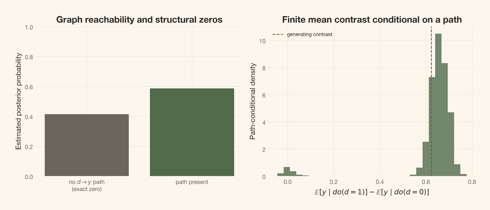
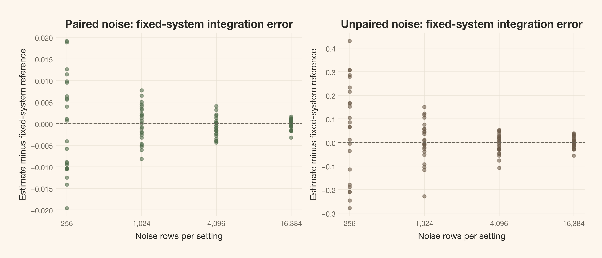
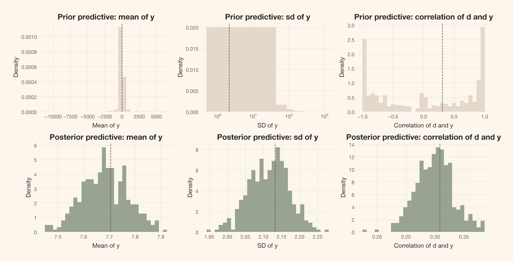
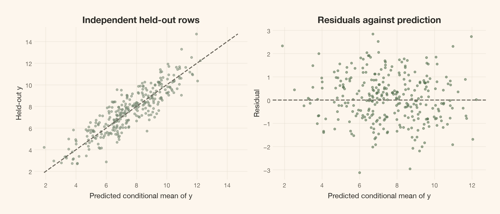

Carry a posterior over causal graphs into a finite nonlinear intervention, preserve exact no-path zeros, and separate structural uncertainty from mechanism uncertainty, outcome noise, and numerical integration error.
Author
Carlos Trujillo
Published
October 7, 2026
Introduction
“We have a posterior for the causal effect, so we have accounted for uncertainty.” That statement is incomplete if the effect posterior conditions on one selected graph. A narrow interval can describe uncertainty about its coefficients while excluding another supported graph in which the intervention cannot reach the outcome.
The correction is not to average a few effect estimates and forget the graphs. It is to carry the joint posterior over graphs and mechanisms through the intervention. In the example below, this produces a distribution with an exact structural-zero component and a path-conditional component. Both belong in the report.
Part 3 of 3.A Causal Graph Is Not One Graph distinguishes structural summaries and observational equivalence. Putting a Posterior on Causal Graphs develops the evidence and graph sampler. This article can be read and executed on its own: it declares the world and priors, generates its own data, and fits its own posterior and graph prior.
Quick summary
This article walks you through:
A finite intervention estimand: replace the equation for d, propagate the other mechanisms, and compare the mean of y under two settings.
Posterior composition: draw a graph, then draw its conditional normal-inverse-gamma mechanisms using the same model that supplied its graph evidence.
Structural zeros: estimate the no-path probability from every retained graph draw, without classifying tiny simulated contrasts as exact zeros.
Numerical integration: use common random numbers, then measure paired and unpaired integration error while holding one graph and mechanism fixed.
Predictive checks with bounded claims: simulate prior and posterior datasets and check fresh held-out rows, without treating prediction as evidence for a disputed causal direction.
Theoretical lens
We use Bayesian model averaging inside an acyclic structural causal model. A graph specifies which variables enter each equation. A mechanism specifies how those inputs act. An intervention replaces an equation; it does not condition on the observational rows with a matching value of the intervened variable. This distinction determines every calculation below.
Four uncertainties must remain separate:
Layer
What varies?
Where it belongs
Graph uncertainty
The directed paths and parent sets
p(G\mid D) and the structural-zero weight
Mechanism uncertainty
Coefficients, intercepts, and noise variances conditional on a graph
p(\theta_G\mid D,G) and the effect distribution
Future outcome noise
New exogenous errors at fixed graph and mechanism
Outcome prediction; integrated out for the mean-effect estimand
Computational diagnostics, not an extra posterior uncertainty component
The first two are epistemic uncertainty within the declared model family. The third remains even if the system is known. The fourth comes from our computation. More simulation can reduce the fourth; it cannot turn observational ambiguity into identification.
We assume independent, complete observations on seven fixed, correctly measured variables; independent Gaussian structural errors; causal sufficiency; causal Markov and faithfulness; and no selection, hidden common causes, measurement error, or feedback. The candidate mechanisms are additive, with no within-mechanism parent interactions and homoscedastic noise at each node. We also assume that mechanisms not replaced by an intervention remain invariant. These assumptions are not posterior draws. Every graph in the analysis shares them.
A finite setting change is the question
The variables are continuous indices, not literal counts, spend, or calendar dates. The four root causes are a,b,c,d. The variable e is an intermediate response to a,b; f responds to d; and y is the terminal outcome. A marketing analogy might call d a calendar driver and f an exposure index, but it supplies no calendar restriction to this analysis.
What happens to the mean outcome when we set d=1 instead of d=0? At graph G and complete mechanism draw \theta_G, the target is
The expectation integrates the exogenous noise of the intervened system. This is a finite mean contrast, not a derivative, an individual treatment effect, or a proposal to randomize real holidays. Its posterior varies over G and \theta_G; a new outcome under either setting has additional noise.
Getting started
The shared Python files contain implementations, not another article’s data or fitted state. The following imports give this notebook the frozen settings and reusable functions; all fits below are local.
The primary settings are frozen as printed below. The integration study is prespecified here, before fitting or executing it. We do not select its numerical effort after seeing favorable estimates.
The upstream mechanisms are linear. The five direct contributions to y use PyMC-Marketing’s MichaelisMentenSaturation, with saturation level 6 and half-saturation exposure 1. The softplus link turns a signed Gaussian index into positive exposure before applying that response. It is part of the world, not an estimated transformation.
Generate this article’s data and inspect the actual generator
data = make_world(DATA_SEED, n_obs)truth = np.array([0, 0, 0, 0, 3, 8, 55], dtype=np.int64)truth_states = parents_to_states(truth, pairs)truth_key = mec_key(truth)display(Code(inspect.getsource(make_world), language="python"))print("The generating graph is used only for evaluation; the fit does not receive it.")
defmake_world(seed,size):"""Draw all seven errors row-wise; size 300 is a prefix of size 1000."""errors=np.random.default_rng(seed).normal(size=(size,n_nodes))a,b,c,d=errors[:,0],errors[:,1],errors[:,2],errors[:,3]e=0.9*a+0.8*b+errors[:,4]f=0.9*d+errors[:,5]y=0.55*h(a)+0.5*h(b)+0.6*h(c)+0.7*h(e)+0.8*h(f)+errors[:,6]returnnp.column_stack([a,b,c,d,e,f,y])
The generating graph is used only for evaluation; the fit does not receive it.
From the causal perspective, Figure 1 is a map of equations we can replace, not a map of regressions we can condition on. The observed f–y association still includes the other parent contributions and noise.
Figure 1: The generating world has linear upstream mechanisms and five saturating contributions to y. The scatter is an observed association, not an isolated causal response curve.
The graph posterior is conditional on explicit mechanisms and a mask
The fitted family need not contain the generator exactly. For a candidate graph, every upstream child gets a linear parent feature. Only child y gets a linear feature plus two fixed Gaussian bumps:
A node’s equation is x_i=\theta_{i0}+\sum_{j\in\mathrm{Pa}_i(G)}\theta_{ij}^{\mathsf T}\phi_i(z_j)+\varepsilon_i. The target remains in raw units. Locations are zero; predictor scales for (a,b,c,d,e,f,y) are (1,1,1,1,1.5,1.5,2). These transforms and the dictionary are fixed before looking at the data. The true bounded response h is not in this finite dictionary.
What prior supplies the integrated graph evidence? Independently across node mechanisms, conditional on the graph, we use
with \tau_0=0.01, \lambda=0.1, \alpha_0=2, and \beta_{0i}=1 in each target’s squared units. The coefficient vector contains the intercept, then parent blocks in node-index order. We use the shape/scale convention p(v)\propto v^{-\alpha_0-1}\exp(-\beta_0/v). Thus \operatorname{IG}(2,1) has mean variance one and infinite variance; it does not imply \mathbb E[\sigma]=1.
For each unordered pair, the graph prior starts with absence and the two directions at (1/3,1/3,1/3). The baseline mask forbids self arrows and every outgoing arrow from y. After local renormalization, each pair incident to y gives absence and the arrow into y probability 1/2 each. We then condition the pair-factorized prior on global acyclicity:
\pi(G)\propto \mathbf 1\{G\text{ is acyclic and respects the mask}\}
\prod_{k=1}^{21}q_k(s_k(G)),\qquad
p(G\mid D)\propto\pi(G)\prod_i p(x_i\mid x_{\mathrm{Pa}_i(G)}).
Here s_k labels absence, forward, or backward for pair k. The q_k values are local probabilities before acyclicity, not DAG-prior marginals. Both d\rightarrow f and f\rightarrow d remain allowed. We have not forced either arrow or any parent of y.
The normal-inverse-gamma integral is exact within this approximating family. The score table subtracts each node’s intercept-only log evidence, a graph-independent constant that does not change graph weights. Proper priors matter to those weights. Independent mechanism priors are not guaranteed score-equivalent, so unequal mass on reversible directions does not establish causal identification.
Diagnose the graph events before reporting their consequences
This notebook fits its own baseline posterior. The sampler integrates mechanism parameters out, samples the unresolved six-node core with discrete Metropolis and parallel tempering, and reconstructs a full graph with an exact draw from the terminal node’s 2^6=64 parent-set weights. Only the cold replica supplies posterior draws. Rejected and self-proposed states remain in the chain; the starting graphs are initial values, not graph-prior draws.
For the intervention, the important graph questions are whether d can reach y and which way the d–f arrow points. Their diagnostics retain chain order and draw frequency; arbitrary graph IDs are not numerical parameters.
Map retained graphs into event diagnostics
summary = graph_summary(posterior, pairs, n_nodes, truth_key, d_index, y_index)diagnostic_data = graph_diagnostic_data(posterior, summary, baseline_probs, labels, pairs)diagnostics = azs.summary(diagnostic_data, ci_prob=0.95, round_to="none")retained_graphs = posterior.posterior.edge.values.reshape(-1, len(pairs))n_total =len(retained_graphs)df_row =next(k for k, pair inenumerate(pairs) iftuple(pair) == (d_index, f_index))diagnostic_events = [ ("No directed path from d to y", ~summary["path"], "event[d has a path to y]"), ("An arrow from d to f", summary["states"][..., df_row] ==1, "event[d→f]"), ("An arrow from f to d", summary["states"][..., df_row] ==2, "event[f→d]"),]probability_rows = []for label, event, key in diagnostic_events: probability_rows.append({"Graph question": label,"Estimated probability": f"{event.mean():.1%}","MC error (pp)": f"{100* diagnostics.loc[key, 'mcse_mean']:.2f}"if key in diagnostics.index else"Not estimable: constant in retained draws", })display(article_table( pd.DataFrame(probability_rows),"Baseline graph probabilities and graph-chain simulation error",))event_mask = diagnostics.index.str.startswith("event[")display(Markdown(f"Across **{int(event_mask.sum())} varying graph events** and the varying scalar summaries, "f"maximum $\\widehat R$ is **{diagnostics.r_hat.max():.4f}** and minimum bulk/tail ESS are "f"**{diagnostics.ess_bulk.min():,.0f}/{diagnostics.ess_tail.min():,.0f}**. "f"The retained graph count is **{n_total:,}**, not an independent sample count."))
Table 1: Baseline graph probabilities and graph-chain simulation error
Graph question
Estimated probability
MC error (pp)
No directed path from d to y
41.4%
0.35
An arrow from d to f
56.7%
0.35
An arrow from f to d
43.3%
0.35
Across 50 varying graph events and the varying scalar summaries, maximum \widehat R is 1.0003 and minimum bulk/tail ESS are 12,777/12,908. The retained graph count is 48,000, not an independent sample count.
Figure 2 compares chains on those same questions. Error bars describe numerical error in their probability estimates. They do not describe uncertainty about the true graph. Running probabilities use every retained draw rather than only the first part of the run.
Figure 2: Per-chain probabilities and running probabilities diagnose the events that enter the intervention analysis. Constant indicators have no estimable per-chain MC error. Agreement or stable running averages cannot rule out a shared unvisited region.
The full diagnostics cover varying pair-state indicators, leading class membership, the generating class, the path event, arrow count, and log evidence. \widehat R, ESS, and MCSE check the coded target’s exploration, not its causal assumptions (Vehtari et al., 2021). A constant observed indicator is not a perfectly converged one. Exact support restrictions and absence of visits are different reasons for constancy.
Scalar traces, movement, and full graph diagnostics
Figure 3: Arrow-count and collapsed-evidence traces show additional aspects of sampler movement. Similar scalar traces do not imply similar graphs.
All graph-event diagnostics and tempering movement
display(article_table( diagnostics[["mean", "mcse_mean", "ess_bulk", "ess_tail", "r_hat"]] .rename(columns={"mean": "Mean", "mcse_mean": "MCSE", "ess_bulk": "Bulk ESS","ess_tail": "Tail ESS", "r_hat": "R-hat"}) .reset_index(names="Quantity"),"All varying baseline quantities: probabilities, arrows, and log-score units", formats={"Mean": "{:.4f}", "MCSE": "{:.4f}", "Bulk ESS": "{:,.0f}","Tail ESS": "{:,.0f}", "R-hat": "{:.4f}"},))metadata = diagnostic_data["posterior"].attrsdisplay(Markdown(f"**{metadata['fixed_indicators']} indicators are fixed by pair support; "f"{metadata['other_constant_indicators']} other indicators are constant in retained draws.** ""Their diagnostics are not estimable."))if metadata["constant_summaries"]:print(f"Constant scalar summaries: {metadata['constant_summaries']}; diagnostics not estimable")swap_rates = np.array([float(posterior.sample_stats[f"swap_{i}"].mean()) for i inrange(len(betas) -1)])display(article_table( pd.DataFrame({"Movement quantity": ["Accepted core changes per attempted update","Proposals rejected for a cycle"],"Rate": [float(posterior.sample_stats.cold_accept.mean()),float(posterior.sample_stats.cold_invalid.mean())], }),"Retained-run movement rates, not convergence thresholds", formats={"Rate": "{:.1%}"},))display(article_table( pd.DataFrame({"Chain": [f"Chain {i +1}"for i inrange(chains)],"Cold–hot–cold round trips": posterior.sample_stats.roundtrips.sum("draw").values, }),"Completed tempering round trips in each chain", formats={"Cold–hot–cold round trips": "{:,.0f}"},))display(article_table( pd.DataFrame({"Neighbors": [f"{i +1} ↔ {i +2}"for i inrange(len(swap_rates))],"Cold-side beta": betas[:-1], "Hot-side beta": betas[1:],"Swap acceptance": swap_rates, }),"Every neighboring swap rate; a weak link can impede transport", formats={"Cold-side beta": "{:.4f}", "Hot-side beta": "{:.4f}","Swap acceptance": "{:.1%}"},))
Table 2: All varying baseline quantities: probabilities, arrows, and log-score units
Quantity
Mean
MCSE
Bulk ESS
Tail ESS
R-hat
event[a–b absent]
0.9575
0.0018
12,917
48,000
1.0002
event[a→b]
0.0217
0.0011
18,447
18,447
1.0002
event[b→a]
0.0208
0.0011
16,515
16,515
1.0001
event[a–c absent]
0.9678
0.0013
19,705
48,000
1.0001
event[a→c]
0.0158
0.0008
24,035
24,035
1.0002
event[c→a]
0.0164
0.0008
26,034
26,034
1.0000
event[a–d absent]
0.9782
0.0010
20,410
48,000
1.0001
event[a→d]
0.0119
0.0007
24,984
24,984
1.0001
event[d→a]
0.0099
0.0006
25,568
25,568
1.0002
event[a→e]
0.9830
0.0010
15,752
48,000
1.0001
event[e→a]
0.0170
0.0010
15,752
15,752
1.0001
event[a–f absent]
0.9674
0.0013
19,590
48,000
1.0002
event[a→f]
0.0174
0.0008
26,374
26,374
1.0001
event[f→a]
0.0152
0.0008
26,641
26,641
1.0001
event[b–c absent]
0.9784
0.0010
23,162
48,000
1.0001
event[b→c]
0.0108
0.0006
26,508
26,508
1.0000
event[c→b]
0.0109
0.0006
29,406
29,406
1.0001
event[b–d absent]
0.9803
0.0010
19,213
48,000
1.0002
event[b→d]
0.0098
0.0006
23,760
23,760
1.0003
event[d→b]
0.0099
0.0006
24,070
24,070
1.0001
event[b→e]
0.9824
0.0010
16,660
48,000
1.0001
event[e→b]
0.0176
0.0010
16,660
16,660
1.0001
event[b–f absent]
0.9785
0.0010
21,791
48,000
1.0001
event[b→f]
0.0103
0.0006
28,972
28,972
1.0001
event[f→b]
0.0112
0.0006
26,639
26,639
1.0000
event[c–d absent]
0.9706
0.0012
19,111
48,000
1.0001
event[c→d]
0.0145
0.0008
25,292
25,292
1.0002
event[d→c]
0.0149
0.0008
23,219
23,219
0.9999
event[c–e absent]
0.9394
0.0018
17,533
48,000
1.0001
event[c→e]
0.0511
0.0017
17,723
17,723
1.0000
event[e→c]
0.0094
0.0005
30,969
30,969
1.0000
event[c–f absent]
0.9748
0.0010
22,291
48,000
1.0001
event[c→f]
0.0115
0.0006
27,911
27,911
1.0001
event[f→c]
0.0136
0.0007
26,460
26,460
1.0001
event[d–e absent]
0.9791
0.0010
19,273
48,000
1.0001
event[d→e]
0.0104
0.0006
25,545
25,545
1.0001
event[e→d]
0.0105
0.0007
24,340
24,340
1.0001
event[d→f]
0.5669
0.0035
19,497
19,497
1.0001
event[f→d]
0.4331
0.0035
19,497
19,497
1.0001
event[d–y absent]
0.9996
0.0001
48,051
48,000
1.0000
event[d→y]
0.0004
0.0001
48,051
48,051
1.0000
event[e–f absent]
0.9745
0.0012
18,287
48,000
1.0001
event[e→f]
0.0124
0.0007
25,430
25,430
1.0000
event[f→e]
0.0130
0.0007
23,037
23,037
1.0000
event[Class 1]
0.6975
0.0040
12,908
12,908
1.0001
event[Class 2]
0.0388
0.0014
17,788
17,788
1.0000
event[Class 3]
0.0298
0.0014
13,990
13,990
1.0001
event[Class 4]
0.0223
0.0010
20,714
20,714
1.0001
event[Generating class]
0.6975
0.0040
12,908
12,908
1.0001
event[d has a path to y]
0.5857
0.0035
19,557
19,557
1.0001
edge_count
8.3538
0.0051
12,777
12,908
1.0001
log_evidence
1458.6667
0.0220
13,088
16,823
1.0001
6 indicators are fixed by pair support; 13 other indicators are constant in retained draws. Their diagnostics are not estimable.
Table 3: Retained-run movement rates, not convergence thresholds
Movement quantity
Rate
Accepted core changes per attempted update
4.1%
Proposals rejected for a cycle
0.8%
Table 4: Completed tempering round trips in each chain
Chain
Cold–hot–cold round trips
Chain 1
667
Chain 2
631
Chain 3
645
Chain 4
672
Table 5: Every neighboring swap rate; a weak link can impede transport
Neighbors
Cold-side beta
Hot-side beta
Swap acceptance
1 ↔︎ 2
1.0000
0.6415
40.1%
2 ↔︎ 3
0.6415
0.4116
38.5%
3 ↔︎ 4
0.4116
0.2640
51.0%
4 ↔︎ 5
0.2640
0.1694
65.6%
5 ↔︎ 6
0.1694
0.1087
76.9%
6 ↔︎ 7
0.1087
0.0697
84.8%
7 ↔︎ 8
0.0697
0.0447
89.6%
8 ↔︎ 9
0.0447
0.0287
91.2%
9 ↔︎ 10
0.0287
0.0184
89.5%
10 ↔︎ 11
0.0184
0.0118
84.5%
11 ↔︎ 12
0.0118
0.0076
79.5%
12 ↔︎ 13
0.0076
0.0049
79.7%
13 ↔︎ 14
0.0049
0.0031
83.2%
14 ↔︎ 15
0.0031
0.0020
88.3%
15 ↔︎ 16
0.0020
0.0000
77.5%
Support-fixed indicators describe assumptions. Other constant indicators can reflect implied restrictions, rare events, or an unvisited region. We do not assign infinite ESS to them. A round trip follows a replica from cold to hottest and back; it is not just a neighboring swap. These movement checks do not prove full exploration. HMC divergences and BFMI do not apply to this discrete Metropolis sampler.
If these checks are poor, the effect calculation does not repair them. More composition draws cannot rescue missing graph mass; computation must address the same target on the same data, not select another dataset with nicer diagnostics.
Two observationally identical worlds disagree about this intervention
The uncertainty about d–f is not merely a small-sample problem. The generating world has d\sim\mathcal N(0,1) and f=0.9d+\varepsilon_f. An exact twin instead uses
In the twin, \operatorname{Cov}(d,f)=(0.9/1.81)1.81=0.9 and \operatorname{Var}(d)=0.9^2/1.81+1/1.81=1. Equality of the joint Gaussian law gives p(d)p(f\mid d)=p(f)p(d\mid f). All other equations, including the nonlinear outcome mechanism, are unchanged. The complete observational law in either world factors as
That is exact distributional equality, not an approximate match of sample correlations or only a shared conditional-independence structure. Nonlinearity at y does not orient the reversible Gaussian pair upstream (Peters et al., 2014). Independently specified parameter priors can nevertheless produce unequal integrated evidence; the posterior’s directional weights remain conditional on those priors and the dictionary.
The causal framework now forces a different question. In the generating world, replacing d changes f and then y. In the twin, d has no descendants that reach y, so its finite contrast is exactly zero. Figure 4 makes the changed intervention route visible.
Figure 4: The generating DAG and its exact observational twin differ only in the d–f direction. Their observational laws agree, but replacing d’s equation changes y only in the generating world.
The exact reverse-d–f DAG has 30.11% empirical posterior mass in this baseline fit. It is one contribution to the no-path component; other no-path graphs also count. Zero visits would not establish zero posterior mass.
For the generating system, only f’s contribution changes. The population mean contrast is therefore
It is strictly positive because h is strictly increasing. We compute its value by quadrature; the twin’s zero follows from its equations, not from numerical integration.
Generating finite mean contrast: 0.622767 (quadrature error 1.49e-09)
Exact observational twin's finite mean contrast: 0 by directed reachability
The quadrature error is numerical error in the generating reference. It is neither posterior uncertainty nor an error rate for our fitted effect distribution.
Draw the mechanisms conditional on each graph, not independently of it
The graph chain is collapsed: it carries p(G\mid D), not regression coefficients. To recover the effect posterior, we need the conditional mechanism posterior that belongs to each sampled parent set. Under the independent node priors and factorized likelihood,
For node i, let B_i be its N\times p_i design matrix: an intercept followed by its parents’ declared feature blocks. Let t_i be the raw observed target vector. The update is
With L_iL_i^{\mathsf T}=\Lambda_{ni}, an actual draw is v_i=b_{ni}/U_i, U_i\sim\operatorname{Gamma}(a_{ni},\text{rate}=1), followed by \theta_i=m_{ni}+\sqrt{v_i}L_i^{-\mathsf T}z_i, z_i\sim\mathcal N(0,I). This is a conditional posterior draw, not a prior draw attached to a posterior graph. Cholesky solves and the residual-plus-prior expression for b_{ni} avoid unstable subtraction of nearly equal sums of squares.
The actual mechanism sampler
The score object that integrated these priors for graph evidence also supplies the conditional parameter draw. Its cached family posteriors avoid refitting regressions for each composition draw. We display the implementation rather than defining a second mechanism sampler.
defdraw_parameters(self,parents,rng,*,prior=False):"""Draw one mechanism: (intercept, weights, variance). ``weights[i, j]`` holds the coefficients of parent j's feature block in child i's mechanism, in :meth:`block` column order, and is zero off the graph and in the padding slots beyond child i's used width u(i); ``intercept`` and ``variance`` have one entry per node. The draw is the exact conjugate update v = b_n / Gamma(a_n, rate 1), theta = m_n + sqrt(v) * solve(chol(Lambda_n).T, z) with z standard normal. ``prior=True`` ignores the observed data and draws from the mechanism prior at the same used width u(i), with the same feature map and prior as the score. """parents,_=self._check_graph(parents)rng=_check_rng(rng)intercept=np.zeros(self.n)weights=np.zeros((self.n,self.n,self.n_features))variance=np.empty(self.n)fornode,maskinenumerate(parents):mask=int(mask)p_indices=_indices(mask)used=self.n_featuresifnodeinself.nonlinear_nodeselse1ifprior:size=1+used*len(p_indices)lambda0=np.empty(size)lambda0[0]=self.tau0lambda0[1:]=self.lammean=np.zeros(size)chol=np.diag(np.sqrt(lambda0))a_n,b_n=self.alpha0,self.beta0[node]else:mean,chol,a_n,b_n=self._posterior(node,mask)variance[node]=b_n/rng.gamma(a_n,1.0)step=solve_triangular(chol.T,rng.normal(size=mean.shape[0]),lower=False)theta=mean+np.sqrt(variance[node])*stepintercept[node]=theta[0]forslot,parentinenumerate(p_indices):start=1+slot*usedweights[node,parent,:used]=theta[start:start+used]returnintercept,weights,variance
This composition preserves dependence between structure and mechanisms. Choosing a graph changes which coefficients exist, their posterior, and the system through which an intervention propagates. Fitting one mechanism model and swapping arrows afterward would not target this joint posterior.
Replace one equation, then propagate the nonlinear system
For one sampled graph and mechanism, a topological order places every parent before its child. At node d we set the requested constant and skip both its original inputs and its error. At every other node we evaluate the unchanged equation using the values already generated for its parents. If d has parents in that candidate graph, the intervention still replaces its entire equation; it does not preserve its observational regression.
A nonlinear mean cannot generally be obtained by sending the upstream means through the outcome function. The target contains \mathbb E[\phi_y(X_j)], not \phi_y(\mathbb E[X_j]). We therefore propagate noise rows through the intervened systems and average their outcome differences.
The actual topological simulator
noise is a matrix of standard-normal exogenous errors; the mechanism variances scale its columns. Passing the same matrix twice gives common random numbers. The do map replaces the entire equation at the specified node.
defsimulate(self,parents,parameters,n_obs,rng,*,do=None,noise=None):"""Generate raw values (n_obs, n) under one mechanism draw. Mechanisms are evaluated in topological order. Exogenous noise is standard normal per node, scaled by sqrt(variance); ``noise``, when given, is that (n_obs, n) standard-normal matrix and replaces the random draws, enabling common random numbers, so ``rng`` may then be None. ``do`` maps node indices to finite constants that replace both the mechanism equation and its noise at those nodes. Every mechanism term uses the same :meth:`block` map as scoring at the child's used width u(node), against the first u(node) weight slots. """parents,order=self._check_graph(parents)intercept,weights,variance=self._check_parameters(parents,parameters)ifisinstance(n_obs,bool)ornotisinstance(n_obs,(int,np.integer))orn_obs<1:raiseValueError("n_obs must be a positive integer")n_obs=int(n_obs)interventions={}ifdoisnotNone:try:items=dict(do).items()except(TypeError,ValueError):raiseValueError("do must map node indices to finite constants")fromNoneforkey,valueinitems:node=_check_index(key,self.n,"do key")amount=_scalar(value,"do value",positive=False)interventions[node]=amountifnoiseisNone:rng=_check_rng(rng)exogenous=rng.normal(size=(n_obs,self.n))else:exogenous=np.asarray(noise,dtype=float)ifexogenous.shape!=(n_obs,self.n)ornotnp.isfinite(exogenous).all():raiseValueError(f"noise must be a finite matrix with shape ({n_obs}, {self.n})")values=np.empty((n_obs,self.n))fornodeinorder:ifnodeininterventions:values[:,node]=interventions[node]continuevalues[:,node]=intercept[node]+np.sqrt(variance[node])*exogenous[:,node]used=self.n_featuresifnodeinself.nonlinear_nodeselse1forparentin_indices(parents[node]):values[:,node]+=(self.block(parent,values[:,parent],child=node)@weights[node,parent,:used])returnvalues
What changes when we pair the two systems? For M independent noise rows, the estimator is
The two evaluations share G, \theta_G, and exogenous errors. Unaffected contributions cancel row by row; the shared outcome error cancels too. Upstream noise can still affect the nonlinear contrast. This coupling is a numerical device for a difference of expectations, not a claim about the distribution of individual causal benefits.
def effect_draws(trace, score, pairs, n_nodes, *, size, noise_rows, seed):"""Compose graph and conditional mechanism draws into finite mean contrasts. Parameters ---------- trace : InferenceData Local baseline graph posterior, retaining chain and draw frequencies. score : BasisScore The fitted score with the same dictionary and NIG priors as the graph fit. pairs : ndarray Ordered node pairs used by the graph-state encoding. n_nodes : int Number of variables in the system. size, noise_rows : int Number of composition draws and paired noise rows per path-present draw. seed : int Frozen seed for graph selection, mechanisms, and inner noise. Returns ------- effects, mcse, path_present : tuple of ndarrays Estimated contrasts, within-draw integration errors, and Boolean path flags. No-path contrasts and their integration errors are exactly zero by structure. """ rng = np.random.default_rng(seed) retained = trace.posterior.edge.values.reshape(-1, len(pairs)) selected = rng.integers(len(retained), size=size) effects = np.zeros(size) mcse = np.zeros(size) path_present = np.zeros(size, dtype=bool)for draw, index inenumerate(selected): graph = states_to_parents(retained[index], pairs, n_nodes) parameters = score.draw_parameters(graph, rng) path_present[draw] = has_path(graph, d_index, y_index)ifnot path_present[draw]:continue# No route to y: exact structural zero, not a numerical threshold. noise = rng.normal(size=(noise_rows, n_nodes)) y_do1 = score.simulate(graph, parameters, noise_rows, None, do={d_index: 1.0}, noise=noise)[:, y_index] y_do0 = score.simulate(graph, parameters, noise_rows, None, do={d_index: 0.0}, noise=noise)[:, y_index] paired = y_do1 - y_do0 effects[draw] = paired.mean() mcse[draw] = paired.std(ddof=1) / np.sqrt(noise_rows)return effects, mcse, path_present
The graph selection resamples the retained empirical posterior. It does not increase the graph chain’s ESS. Each selection receives a fresh conditional mechanism draw; increasing M only refines that draw’s noise expectation. Without a directed path, we do not integrate an already known zero.
Report the structural-zero weight and the path-conditional distribution together
A histogram of all computed contrasts can blur an exact atom into an ordinary density. A histogram that drops the zeros can conceal the atom entirely. The structural framework supplies the correct decomposition before we plot anything.
Let A denote a directed path from d to y, and define
Every no-path system has \Delta=0 because equation replacement cannot change y or any of its ancestors. For P(A\mid D)>0, the exact posterior decomposition is
A path is necessary, not sufficient, for a nonzero finite contrast. Mechanism contributions can cancel for the two chosen settings even when the variables remain dependent elsewhere. Thus H need not be a purely continuous distribution in general. Faithfulness does not prohibit a zero contrast at two particular settings. If the true w_0=1, the full distribution is \delta_0 and a path-conditional law is unnecessary; a finite sample without paths does not establish that case.
We estimate w_0 from all retained graph draws. The smaller composition sample estimates H with finite inner integration. We do not estimate the total zero-atom probability by asking whether a floating-point effect equals, or lies close to, zero.
effects, effect_mcse, path_present = effect_draws( posterior, score, pairs, n_nodes, size=EFFECT_DRAWS, noise_rows=NOISE_ROWS, seed=EFFECT_SEED,)w0_hat =float((~summary["path"]).mean())path_effects = effects[path_present]print(f"Estimated w0=P(no d→y path): {w0_hat:.3f}, using all {n_total:,} retained graph draws")print(f"Path-present composition draws: {len(path_effects):,} of {EFFECT_DRAWS:,}")if path_effects.size: conditional_quantiles = np.quantile(path_effects, [0.025, 0.25, 0.5, 0.75, 0.975]) conditional_positive =float(np.mean(path_effects >0.0)) inner_mcse_quantiles = np.quantile(effect_mcse[path_present], [0.5, 0.95]) display(article_table( pd.DataFrame({"Path-conditional quantile": ["2.5%", "25%", "50%", "75%", "97.5%"],"Finite mean contrast": conditional_quantiles, }),"Quantiles of H: conditional on a directed path, not full-mixture quantiles", formats={"Finite mean contrast": "{:.4f}"}, )) display(Markdown(f"Estimated **$P(\\Delta>0\\mid A,D)={conditional_positive:.1%}$**, ""explicitly conditional on a path and approximated by finite-noise composition. "f"Inner MCSE of the paired means has median **{inner_mcse_quantiles[0]:.4f}** "f"and 95th percentile **{inner_mcse_quantiles[1]:.4f}**." )) mixture_mean_hat = (1.0- w0_hat) *float(path_effects.mean()) display(Markdown(f"With **$\\widehat w_0={w0_hat:.3f}$** and the conditional distribution above, "f"the corresponding full-mixture mean estimate is **{mixture_mean_hat:.4f}**. ""It blends the two components; it does not replace either." ))else: display(Markdown("**No path-present composition draw was selected.** Conditional quantiles, ""the conditional sign probability, and a composition-based mixture mean are not estimated. ""The no-path probability estimate above still comes from the full graph chain; ""this empty composition sample does not imply that $w_0=1$." ))
Estimated w0=P(no d→y path): 0.414, using all 48,000 retained graph draws
Path-present composition draws: 706 of 1,200
Table 6: Quantiles of H: conditional on a directed path, not full-mixture quantiles
Path-conditional quantile
Finite mean contrast
2.5%
0.0117
25%
0.6307
50%
0.6561
75%
0.6828
97.5%
0.7245
Estimated P(\Delta>0\mid A,D)=98.0%, explicitly conditional on a path and approximated by finite-noise composition. Inner MCSE of the paired means has median 0.0026 and 95th percentile 0.0038.
With \widehat w_0=0.414 and the conditional distribution above, the corresponding full-mixture mean estimate is 0.3710. It blends the two components; it does not replace either.
The strict-positive estimate concerns the sign of the mean contrast. It is not the probability that a future outcome increases, nor a classification of a zero atom. Finite inner integration can alter signs close to zero. The reported MCSEs quantify that numerical limitation, not credible-interval coverage.
Figure 5 keeps the no-path and path-conditional components separate. The right panel is normalized over path-present composition draws only; it represents H, not the full posterior density.
Code
fig, axes = plt.subplots(1, 2, figsize=(10, 4))axes[0].bar([0, 1], [w0_hat, 1.0- w0_hat], color=[COLORS["ink_muted"], COLORS["green_strong"]])axes[0].set(xticks=[0, 1], xticklabels=["no $d\\to y$ path\n(exact zero)", "path present"], ylabel="Estimated posterior probability", ylim=(0, 1), title="Graph reachability and structural zeros")if path_effects.size: axes[1].hist(path_effects, bins=30, density=True, color=COLORS["green_strong"], alpha=0.8) axes[1].axvline(true_effect, color=COLORS["brown"], ls="--", lw=1.2, label="generating contrast") axes[1].legend(frameon=False, fontsize=8)else: axes[1].text(0.5, 0.5, "No path-present composition draws; H not estimated", ha="center", va="center", wrap=True, transform=axes[1].transAxes)axes[1].set(xlabel=r"$\mathbb{E}[y\mid do(d{=}1)]-\mathbb{E}[y\mid do(d{=}0)]$", ylabel="Path-conditional density", title="Finite mean contrast conditional on a path")plt.show()

Figure 5: The full effect posterior retains an exact no-path component and a path-conditional component. Left: no-path and path-present probabilities from all retained graph draws. Right: the finite mean contrast conditional on a path, estimated by composition, with the generating contrast marked. A path does not guarantee a nonzero contrast, so the left bar is not a measured total zero-atom probability.
For a decision report, the useful object is the full distribution. Its cumulative distribution is F_\Delta(t)=w_0\mathbf1\{t\ge0\}+(1-w_0)F_H(t). Report the no-path weight, the conditional contrast distribution and sign probability, and the relevant graph-chain and integration diagnostics together. A model-averaged mean can be appropriate for an expected-utility calculation, but a mean alone hides whether uncertainty concerns the route, its mechanism, or both.
Check the intervention settings against the marginal observed range
d_min, d_max = data[:, d_index].min(), data[:, d_index].max()print(f"Observed d range: [{d_min:.3f}, {d_max:.3f}]")print(f"d=0 and d=1 both inside this range: {bool(d_min <=0.0<1.0<= d_max)}")
Observed d range: [-4.042, 2.826]
d=0 and d=1 both inside this range: True
Both settings lie within the observed marginal range of d. This does not establish adequate observed support for every joint-parent configuration reached under every candidate graph. Intervention propagation may move those configurations beyond where a mechanism was well constrained. In particular, the dictionary’s linear term dominates far from the bump centers; the fitted model has no guaranteed saturating extrapolation even though the generator saturates.
More inner noise rows refine a fixed mean, not a posterior
The previous MCSEs estimate noise-integration error at individual posterior draws. To see how numerical effort changes that error, we now fix one path-present retained graph and one conditional posterior mechanism draw, sampled once with the prespecified integration seed. We keep both fixed across all M\in(256,1024,4096,16384) and all 24 repeats at each M.
Each repeat uses fresh, independent noise. The paired estimate shares its noise matrix between settings; the unpaired estimate uses two independently generated matrices. Repeats at different M are independent too, not nested prefixes selected for a favorable trend.
At fixed G,\theta_G, the variance of a paired mean is
The unpaired version has no covariance term. Pairing helps when the induced covariance is positive; common random numbers are not a universal variance-reduction guarantee. Neither set of repeats is a set of additional posterior draws.
An exact mean within the fixed dictionary supplies a numerical reference
We can measure integration error against a deterministic reference for this one fitted system. The baseline mask makes y terminal, and every upstream mechanism is linear Gaussian. Therefore each parent of y remains marginally Gaussian after equation replacement. We propagate their means and covariances in topological order, setting d’s variance to zero. For Z\sim\mathcal N(\mu,s^2), the nonlinear feature expectation is
This Gaussian convolution identity and \mathbb E[Z]=\mu give the exact outcome mean in the declared dictionary, up to floating-point arithmetic. Parent correlations must be propagated upstream, but additivity means the final outcome expectation needs only each parent’s marginal moments. This reference is not the generating-world contrast, a posterior mean, or a new fit.
Exact fixed-system mean under the linear-upstream, terminal-outcome family
def fixed_system_mean(score, graph, parameters, d_value):"""Evaluate an intervention mean for the frozen linear-upstream family. Parameters ---------- score : BasisScore The declared dictionary; only the terminal outcome is nonlinear. graph : ndarray A baseline-mask DAG in parent-mask form. parameters : tuple One fixed intercept, weight, and variance draw from this score. d_value : float The constant replacing d's structural equation. Returns ------- float Mean outcome after Gaussian moment propagation and exact feature averaging. """ intercept, weights, variance = parameters means = np.zeros(n_nodes) covariance = np.zeros((n_nodes, n_nodes))for node in topological_order(graph):if node == y_index:continueif node == d_index: means[node] = d_valuecontinue coefficients = weights[node, :, 0] / score.scale means[node] = intercept[node] + coefficients @ (means - score.loc) cross_covariance = coefficients @ covariance marginal_variance = variance[node] + coefficients @ covariance @ coefficients covariance[node, :] = cross_covariance covariance[:, node] = cross_covariance covariance[node, node] = marginal_variance outcome_mean = intercept[y_index]for parent inrange(n_nodes):ifnotint(graph[y_index]) & (1<< parent):continue z_mean = (means[parent] - score.loc[parent]) / score.scale[parent] z_variance = covariance[parent, parent] / score.scale[parent]**2 spread = score.width**2+ z_variance bump_means = np.sqrt(score.width**2/ spread) * np.exp(-0.5* (z_mean - score.centers)**2/ spread ) feature_means = np.r_[z_mean, bump_means] outcome_mean += weights[y_index, parent] @ feature_meansreturnfloat(outcome_mean)
Now we compare both estimators against the same fixed-system reference. The table reports signed mean error across the repeats, their standard deviation, root mean squared numerical error, and average reported inner MCSE. With 24 repeats these are themselves finite-simulation summaries; they do not certify an asymptotic rate or a posterior interval’s coverage.
path_graph_indices = np.flatnonzero(summary["path"].reshape(-1))integration_rows = []if path_graph_indices.size: mechanism_seed, noise_seed = np.random.SeedSequence(INTEGRATION_SEED).spawn(2) rng_fixed = np.random.default_rng(mechanism_seed) fixed_graph_index =int(rng_fixed.choice(path_graph_indices)) fixed_graph = states_to_parents(retained_graphs[fixed_graph_index], pairs, n_nodes) fixed_parameters = score.draw_parameters(fixed_graph, rng_fixed) fixed_reference = ( fixed_system_mean(score, fixed_graph, fixed_parameters, 1.0)- fixed_system_mean(score, fixed_graph, fixed_parameters, 0.0) ) repeat_seeds =iter(noise_seed.spawn(len(NOISE_GRID) * INTEGRATION_REPEATS))for noise_rows in NOISE_GRID:for repeat inrange(INTEGRATION_REPEATS): rng_repeat = np.random.default_rng(next(repeat_seeds)) noise = rng_repeat.normal(size=(noise_rows, n_nodes)) paired_y1 = score.simulate(fixed_graph, fixed_parameters, noise_rows, None, do={d_index: 1.0}, noise=noise)[:, y_index] paired_y0 = score.simulate(fixed_graph, fixed_parameters, noise_rows, None, do={d_index: 0.0}, noise=noise)[:, y_index] differences = paired_y1 - paired_y0 unpaired_y1 = score.simulate(fixed_graph, fixed_parameters, noise_rows, rng_repeat, do={d_index: 1.0})[:, y_index] unpaired_y0 = score.simulate(fixed_graph, fixed_parameters, noise_rows, rng_repeat, do={d_index: 0.0})[:, y_index]for method, estimate, mcse in [ ("Paired", differences.mean(), differences.std(ddof=1) / np.sqrt(noise_rows)), ("Unpaired", unpaired_y1.mean() - unpaired_y0.mean(), np.sqrt((unpaired_y1.var(ddof=1) + unpaired_y0.var(ddof=1)) / noise_rows)), ]: integration_rows.append({"Noise rows": noise_rows, "Repeat": repeat +1, "Method": method,"Estimate": float(estimate), "Numerical error": float(estimate - fixed_reference),"Inner MCSE": float(mcse), })print(f"Fixed retained graph index: {fixed_graph_index}; mechanism sampled once")print(f"Fixed-system contrast reference: {fixed_reference:.8f}")else: display(Markdown("**No path-present graph was retained, so the fixed-path integration study cannot be ""computed from this chain.** This does not establish $w_0=1$. We do not invent a graph ""or substitute a new posterior fit for the prespecified study." ))integration_draws = pd.DataFrame(integration_rows, columns=["Noise rows", "Repeat", "Method", "Estimate", "Numerical error", "Inner MCSE",])ifnot integration_draws.empty: integration_summary_rows = []for (noise_rows, method), group in integration_draws.groupby(["Noise rows", "Method"], sort=True): error = group["Numerical error"].to_numpy() integration_summary_rows.append({"Noise rows": noise_rows, "Method": method,"Mean numerical error": error.mean(),"Repeat SD": error.std(ddof=1),"Numerical RMSE": np.sqrt(np.mean(error**2)),"Mean inner MCSE": group["Inner MCSE"].mean(), }) integration_summary = pd.DataFrame(integration_summary_rows) display(article_table( integration_summary,"Prespecified numerical-integration study: one graph, one mechanism, 24 repeats per cell", formats={"Noise rows": "{:,.0f}", "Mean numerical error": "{:.6f}","Repeat SD": "{:.6f}", "Numerical RMSE": "{:.6f}", "Mean inner MCSE": "{:.6f}"}, ))
Table 7: Prespecified numerical-integration study: one graph, one mechanism, 24 repeats per cell
Noise rows
Method
Mean numerical error
Repeat SD
Numerical RMSE
Mean inner MCSE
256
Paired
-0.000873
0.011001
0.010805
0.009850
256
Unpaired
0.058306
0.204999
0.208981
0.183291
1,024
Paired
0.000042
0.004199
0.004111
0.004888
1,024
Unpaired
0.004713
0.086175
0.084492
0.091074
4,096
Paired
-0.000730
0.002260
0.002330
0.002460
4,096
Unpaired
-0.008228
0.041076
0.041044
0.045360
16,384
Paired
-0.000072
0.001204
0.001181
0.001220
16,384
Unpaired
-0.001181
0.023456
0.022992
0.022721
Figure 6 shows the deviations, not another effect posterior. The two panels have separate vertical scales and retain every repeat; the table gives directly comparable units. If more noise rows reduce the displayed variation, they have refined one expectation. They have not added graph information or reduced mechanism uncertainty.
Code
fig, axes = plt.subplots(1, 2, figsize=(10, 4))for ax, method, color inzip(axes, ("Paired", "Unpaired"), (COLORS["green_strong"], COLORS["brown"])):ifnot integration_draws.empty: group = integration_draws.loc[integration_draws["Method"] == method] ax.scatter(group["Noise rows"], group["Numerical error"], s=18, alpha=0.55, color=color) ax.axhline(0.0, color=COLORS["ink_muted"], ls="--", lw=1) ax.set_xscale("log", base=2) ax.set(xticks=NOISE_GRID, xticklabels=[f"{m:,}"for m in NOISE_GRID])else: ax.text(0.5, 0.5, "No retained path-present graph; study not computed", ha="center", va="center", wrap=True, transform=ax.transAxes) ax.set(title=f"{method} noise: fixed-system integration error", xlabel="Noise rows per setting", ylabel="Estimate minus fixed-system reference")plt.show()

Figure 6: Independent noise repeats measure numerical error for one fixed path-present graph and one fixed posterior mechanism. Paired and unpaired estimates target the same deterministic contrast reference at each prespecified M. All 24 repeats per method and M are shown; vertical scales are separate. These are integration errors, not posterior draws or interval-coverage results.
This is a numerical-effort study, not a repeated-dataset study. We have not assessed calibrated graph probabilities, causal-effect interval coverage, or error rates for a graph-selection rule. A reference evaluated under a sampled approximating mechanism also cannot quantify that dictionary’s discrepancy from the true h.
Prediction checks the data model, not the intervention direction
The Bayesian framework also asks what our priors and posterior imply in data space. For a replicated dataset, we draw one graph and one complete set of mechanisms shared by all its rows, then draw row-level noise. Resampling a graph independently for each row would produce a different model.
The graph prior must be sampled independently of the posterior. We fit the same masked acyclic target to zero observations, so every integrated log evidence is exactly zero and only the graph prior remains. Using the posterior graphs with prior parameters would not be a prior predictive check.
Independently sample the graph prior with zero observations
The prior chain needs diagnostics too. Acyclicity makes its distribution different from independent pair draws or random topological starts. The zero-data log evidence is constant by construction; it has no estimable \widehat R or ESS.
Diagnose the independently sampled graph prior
prior_summary = graph_summary(prior_posterior, pairs, n_nodes, truth_key, d_index, y_index)prior_diagnostic_data = graph_diagnostic_data( prior_posterior, prior_summary, baseline_probs, labels, pairs,)prior_diagnostics = azs.summary(prior_diagnostic_data, ci_prob=0.95, round_to="none")print(f"Prior max R-hat: {prior_diagnostics.r_hat.max():.4f}; "f"minimum bulk/tail ESS: {prior_diagnostics.ess_bulk.min():,.0f}/"f"{prior_diagnostics.ess_tail.min():,.0f}")print(f"Prior log evidence maximum absolute value: "f"{np.abs(prior_posterior.posterior.log_evidence.values).max():g}")prior_metadata = prior_diagnostic_data["posterior"].attrsprior_class_visits =int(prior_summary["true_class"].sum())prior_class_status = (f" (includes the generating class: not visited in this finite prior sample; "f"0 of {prior_summary['true_class'].size:,} retained draws)"if prior_class_visits ==0else"")print(f"Prior support-fixed indicators: {prior_metadata['fixed_indicators']}; "f"other constant indicators: {prior_metadata['other_constant_indicators']}"f"{prior_class_status}")if prior_class_visits:print(f"Generating class visited in {prior_class_visits:,} of "f"{prior_summary['true_class'].size:,} retained prior draws")print(f"Prior constant scalar summaries: {prior_metadata['constant_summaries']}; ""their diagnostics are not estimable")
Prior max R-hat: 1.0001; minimum bulk/tail ESS: 46,021/46,021
Prior log evidence maximum absolute value: 0
Prior support-fixed indicators: 6; other constant indicators: 1 (includes the generating class: not visited in this finite prior sample; 0 of 48,000 retained draws)
Prior constant scalar summaries: log_evidence; their diagnostics are not estimable
Table 8: Varying prior graph-event and arrow-count diagnostics; zero log evidence is excluded
Quantity
Mean
MCSE
Bulk ESS
Tail ESS
R-hat
event[a–b absent]
0.4084
0.0022
47,825
47,825
1.0000
event[a→b]
0.2936
0.0021
47,896
47,896
1.0000
event[b→a]
0.2981
0.0021
47,660
47,660
1.0000
event[a–c absent]
0.4041
0.0023
47,292
47,292
1.0000
event[a→c]
0.2984
0.0021
47,975
47,975
1.0000
event[c→a]
0.2975
0.0021
47,966
47,966
0.9999
event[a–d absent]
0.4114
0.0023
47,197
47,197
1.0000
event[a→d]
0.2936
0.0021
48,657
48,000
1.0000
event[d→a]
0.2950
0.0021
46,631
46,631
1.0000
event[a–e absent]
0.4117
0.0022
47,913
47,913
0.9999
event[a→e]
0.2943
0.0021
47,319
47,319
1.0000
event[e→a]
0.2941
0.0021
47,429
47,429
1.0000
event[a–f absent]
0.4109
0.0022
48,396
48,000
1.0001
event[a→f]
0.2924
0.0021
46,681
46,681
1.0000
event[f→a]
0.2967
0.0021
47,741
47,741
0.9999
event[a–y absent]
0.4954
0.0023
47,767
47,767
1.0001
event[a→y]
0.5046
0.0023
47,767
47,767
1.0001
event[b–c absent]
0.4105
0.0023
47,708
47,708
1.0001
event[b→c]
0.2942
0.0021
46,543
46,543
1.0000
event[c→b]
0.2953
0.0021
47,488
47,488
1.0000
event[b–d absent]
0.4113
0.0022
48,884
48,000
1.0000
event[b→d]
0.2944
0.0021
47,952
47,952
1.0001
event[d→b]
0.2943
0.0021
47,909
47,909
1.0000
event[b–e absent]
0.4063
0.0023
47,503
47,503
1.0000
event[b→e]
0.2969
0.0021
47,332
47,332
1.0000
event[e→b]
0.2968
0.0021
47,481
47,481
1.0000
event[b–f absent]
0.4135
0.0022
48,257
48,000
1.0000
event[b→f]
0.2938
0.0021
47,044
47,044
1.0000
event[f→b]
0.2927
0.0021
47,759
47,759
1.0000
event[b–y absent]
0.4995
0.0023
48,223
48,000
1.0000
event[b→y]
0.5005
0.0023
48,223
48,000
1.0000
event[c–d absent]
0.4112
0.0023
46,604
46,604
0.9999
event[c→d]
0.2949
0.0021
46,021
46,021
1.0001
event[d→c]
0.2939
0.0021
47,181
47,181
1.0000
event[c–e absent]
0.4107
0.0023
47,703
47,703
1.0000
event[c→e]
0.2929
0.0021
47,446
47,446
1.0000
event[e→c]
0.2964
0.0021
47,666
47,666
1.0001
event[c–f absent]
0.4139
0.0023
47,388
47,388
0.9999
event[c→f]
0.2926
0.0021
46,718
46,718
1.0000
event[f→c]
0.2935
0.0021
48,207
48,000
1.0000
event[c–y absent]
0.4974
0.0023
48,234
48,000
1.0000
event[c→y]
0.5026
0.0023
48,234
48,000
1.0000
event[d–e absent]
0.4124
0.0022
48,149
48,000
1.0000
event[d→e]
0.2944
0.0021
47,657
47,657
1.0000
event[e→d]
0.2932
0.0021
47,131
47,131
1.0000
event[d–f absent]
0.4054
0.0023
47,067
47,067
1.0000
event[d→f]
0.2990
0.0021
47,831
47,831
1.0000
event[f→d]
0.2956
0.0021
47,658
47,658
1.0000
event[d–y absent]
0.5014
0.0023
48,356
48,000
1.0000
event[d→y]
0.4986
0.0023
48,356
48,000
1.0000
event[e–f absent]
0.4140
0.0022
47,934
47,934
0.9999
event[e→f]
0.2917
0.0021
46,808
46,808
1.0001
event[f→e]
0.2943
0.0021
48,040
48,000
1.0000
event[e–y absent]
0.4995
0.0023
47,944
47,944
1.0000
event[e→y]
0.5005
0.0023
47,944
47,944
1.0000
event[f–y absent]
0.5006
0.0023
48,439
48,000
1.0000
event[f→y]
0.4994
0.0023
48,439
48,000
1.0000
event[Class 1]
0.0000
0.0000
48,018
48,018
1.0000
event[Class 2]
0.0000
0.0000
48,018
48,018
1.0000
event[Class 3]
0.0000
0.0000
48,018
48,018
1.0000
event[Class 4]
0.0000
0.0000
48,018
48,018
1.0000
event[d has a path to y]
0.7909
0.0019
47,480
47,480
1.0000
edge_count
11.8505
0.0097
48,581
47,953
1.0000
These diagnostics concern the sampled prior distribution. Support-fixed probabilities are assumptions, and other constants in the retained run do not prove zero or unit prior probability.
Now the same mechanism model supplies both predictive distributions. The prior uses zero-data graphs and prior parameters; the posterior uses baseline posterior graphs and their conditional parameters. Each replicate has N=1000 rows, matching the primary dataset.
One graph and one mechanism draw per predictive dataset
def predictive_statistics(trace, score, pairs, n_nodes, *, size, n_obs, prior, seed):"""Generate replicated dataset summaries under a graph and mechanism distribution. Parameters ---------- trace : InferenceData Independently fitted graph prior or local baseline graph posterior. score : BasisScore The same declared mechanism family used by the corresponding graph target. pairs : ndarray Ordered node pairs for the graph-state encoding. n_nodes : int Number of variables. size, n_obs : int Replicated datasets and rows per dataset. prior : bool Draw mechanism priors rather than conditional posteriors when True. seed : int Frozen seed for graph selection, parameters, and replicated row noise. Returns ------- ndarray Dataset-level mean y, sample SD y, and correlation of d with y. """ rng = np.random.default_rng(seed) retained = trace.posterior.edge.values.reshape(-1, len(pairs)) output = np.empty((size, 3))for draw, index inenumerate(rng.integers(len(retained), size=size)): graph = states_to_parents(retained[index], pairs, n_nodes) parameters = score.draw_parameters(graph, rng, prior=prior) replicated = score.simulate(graph, parameters, n_obs, rng) output[draw] = [replicated[:, y_index].mean(), replicated[:, y_index].std(ddof=1), np.corrcoef(replicated[:, d_index], replicated[:, y_index])[0, 1]]return outputprior_predictive = predictive_statistics( prior_posterior, prior_score, pairs, n_nodes, size=PREDICTIVE_REPLICATES, n_obs=n_obs, prior=True, seed=PREDICTIVE_SEED,)posterior_predictive = predictive_statistics( posterior, score, pairs, n_nodes, size=PREDICTIVE_REPLICATES, n_obs=n_obs, prior=False, seed=PREDICTIVE_SEED,)observed_statistics = np.array([data[:, y_index].mean(), data[:, y_index].std(ddof=1), np.corrcoef(data[:, d_index], data[:, y_index])[0, 1]])
The frozen prior is diffuse. Figure 7 retains the full simulated ranges rather than clipping them to the posterior or retuning the prior. Rows have separate axes, and the prior SD axis is logarithmic. This display can expose a prior that is implausible for a real application; here we preserve it to keep the experiment’s assumptions visible.
Code
fig, axes = plt.subplots(2, 3, figsize=(12, 6))for row, (name, stats, color) inenumerate([ ("Prior predictive", prior_predictive, COLORS["accent"]), ("Posterior predictive", posterior_predictive, COLORS["primary"]) ]):for col, statistic inenumerate(["Mean of y", "SD of y", "Correlation of d and y"]): ax = axes[row, col] ax.hist(stats[:, col], bins=30, density=True, color=color, alpha=0.75) ax.axvline(observed_statistics[col], color=COLORS["brown"], ls="--", lw=1)if row ==0and col ==1: ax.set_xscale("log") ax.set(title=f"{name}: {statistic.lower()}", xlabel=statistic, ylabel="Density")plt.show()

Figure 7: Prior and posterior predictive dataset summaries use one graph and one mechanism draw per dataset. Dashed lines mark observed mean y, SD y, and d–y correlation. All simulated values remain visible; axes are separate across rows and the prior SD axis is logarithmic, so the diffuse prior is not hidden by posterior-scale clipping.
Each predictive distribution combines uncertainty over graph and mechanisms with new row-level noise. By contrast, the effect distribution integrates that noise at each graph-mechanism draw. The two plots therefore answer different questions even though they use the same fitted model.
Fresh held-out rows check conditional prediction without a refit
We generate a fresh N=300 dataset with its prespecified held-out seed. No inference uses these rows. For each posterior graph and mechanism draw, we evaluate the conditional mean of y at that graph’s observed held-out parent values. Averaging those means gives a model-averaged prediction; subtracting it from the held-out outcomes gives residuals.
This is not the intervention calculation. It neither replaces an equation nor propagates generated parent values, and it does not add simulated outcome noise to a conditional mean.
Evaluate conditional means on a fresh, unused dataset
fig, axes = plt.subplots(1, 2, figsize=(10, 4))limits = np.r_[mu_hat, heldout[:, y_index]]lo, hi = limits.min(), limits.max()axes[0].scatter(mu_hat, heldout[:, y_index], s=10, alpha=0.5, color=COLORS["primary"], rasterized=True)axes[0].plot([lo, hi], [lo, hi], ls="--", color=COLORS["ink_muted"])axes[0].set(xlabel="Predicted conditional mean of y", ylabel="Held-out y", title="Independent held-out rows")axes[1].scatter(mu_hat, residuals, s=10, alpha=0.5, color=COLORS["green_strong"], rasterized=True)axes[1].axhline(0.0, ls="--", color=COLORS["ink_muted"])axes[1].set(xlabel="Predicted conditional mean of y", ylabel="Residual", title="Residuals against prediction")plt.show()

Figure 8: Fresh held-out outcomes are compared with posterior mean conditional predictions evaluated at their own observed parent values. Residuals expose remaining predictive error. No graph, coefficient, or noise posterior was updated with these rows; this is not intervention validation.
Even an excellent result in Figure 8 cannot choose between the two causal worlds. Their Gaussian (d,f) covariance is exactly \left(\begin{smallmatrix}1&0.9\\0.9&1.81\end{smallmatrix}\right), and they share p(a)p(b)p(c)p(e\mid a,b)p(d,f)p(y\mid a,b,c,e,f). They therefore have the same observational predictive law but different \operatorname{do}(d) laws. Predictive checks probe the data implications of our model; they do not resolve this direction or validate the intervention-invariance assumption.
Considerations
A complete distribution still lives inside an incomplete model family
Carrying graph uncertainty into the effect prevents one avoidable omission: reporting only the effect under a chosen DAG. It does not include unmeasured causes, an incorrect hard mask, nonlinear upstream mechanisms outside this family, heteroscedastic errors, feedback, measurement error, selection, or within-mechanism parent interactions. A posterior cannot put mass on an alternative it has no way to represent.
The local evidence is exact for the finite dictionary, not for the generating Michaelis–Menten response. Additivity excludes within-mechanism parent interactions, and the outcome dictionary has no general saturating extrapolation guarantee. Changing units requires compatible predictor transforms and squared-unit variance-prior scales; translation also changes the interpretation of the zero-centered intercept prior. More noise rows do not correct any of these assumptions. The local score table grows as n2^{n-1}; this seven-node experiment makes no scaling claim.
Computation cannot supply a missing causal direction
The no-path weight, path-conditional quantiles, and conditional strict-positive probability are distinct targets. The first comes from the full graph chain. The latter two also require mechanism composition and accurate inner integration. Increasing the composition sample or noise rows does not increase the graph chain’s ESS, and stability of selected graph events cannot bound unseen posterior mass. One retained graph sets frequency resolution, not a bound on the probability of an unvisited graph.
A path can transmit changes without producing a nonzero contrast between these two settings. We therefore report the guaranteed structural-zero contribution w_0, not a measured total atom at zero. Future outcome dispersion is different again: an uncertain mean effect does not directly supply the probability of an individual’s improvement or a population’s realized aggregate benefit.
What the framework cannot tell us
Neither the effect analysis nor the numerical study is a calibration study. We have not measured interval coverage, graph-selection error rates, or transfer performance in another domain. The integration study fixes one posterior system and varies computational effort; the held-out study checks predictions from one synthetic world without refitting. Neither tests whether causal assumptions are correct.
For the abstract SCM, randomizing d and measuring f or y would distinguish the twin worlds. In a calendar interpretation, randomizing holidays is not a feasible intervention. Credible external knowledge about calendar autonomy could instead justify forbidding f\rightarrow d, but doing so changes the target. We deliberately keep that restriction out of this article’s baseline effects. More observations from the same law cannot replace evidence that addresses the disputed direction.
Conclusions
The naive report starts with one selected graph and ends with one effect interval. Our correction starts with the full graph posterior, draws compatible conditional mechanisms, replaces an equation, and reports the resulting distribution without hiding its structural alternatives.
Five takeaways follow:
State the intervention before computing its effect. Here the target is a population mean contrast between \operatorname{do}(d=1) and \operatorname{do}(d=0), with unchanged downstream mechanisms. It is not an observational conditional mean, a derivative, or a practical holiday experiment.
Compose the joint posterior, not disconnected layers. Draw G from the baseline graph posterior, then draw its mechanisms from the same conditional NIG model used for evidence. Propagate the intervened equations in topological order.
Report w_0 and H together. The full law is w_0\delta_0+(1-w_0)H. No path guarantees zero; a path does not guarantee a nonzero finite contrast. Conditional quantiles or sign probabilities without their structural conditioning can mislead.
Spend computation on the uncertainty it can reduce. Paired noise refines each mean contrast; graph-event diagnostics assess graph-chain simulation; mechanism draws represent parameter uncertainty; predictive noise represents future variation. None of these substitutes for another.
Use prediction as a model check, not a directional verdict. An exact observational twin can predict the same data and imply a zero intervention contrast. A successful predictive check does not remove that alternative.
For practice, a causal-effect report should give the structural-zero contribution, the path-conditional distribution, the full-mixture summaries relevant to the decision, and the assumptions and numerical diagnostics that support them. If the decision changes across those components, selecting a graph or averaging away the disagreement is not a solution. The next evidence should address the disagreement itself.
If the action is worthwhile only when changing d changes y, what experiment or defensible external knowledge would separate the remaining causal stories before the action is taken?
Use this article’s pinned environment specification and its from_uncertain_graphs_to_uncertain_effects Jupyter kernel. The analysis uses the frozen PyMC 6.3.2, PyTensor 3.3.1, and PyMC-Marketing 1.2.0 stack. From the repository root, load the website’s .env required by its render configuration and execute:
For a fresh clone, create .env from .env.example and supply its required MIMO_API_KEY before running these commands. This is a website-render requirement, not a dependency of the graph computation.
The repository-root PYTHONPATH makes the kernel import the checked-out package rather than another installed checkout. This notebook needs no saved trace or execution output from Parts 1 or 2.
---title: "From Uncertain Graphs to Uncertain Effects"author: "Carlos Trujillo"date: "2026-10-07"description: "Carry a posterior over causal graphs into a finite nonlinear intervention, preserve exact no-path zeros, and separate structural uncertainty from mechanism uncertainty, outcome noise, and numerical integration error."image: "/images/bayesian_cpdag_graph_discovery.png"image-alt: "Several causal graph equivalence classes receiving different amounts of posterior probability."categories: [causal inference, bayesian, graphical models, causal discovery, python]jupyter: from_uncertain_graphs_to_uncertain_effectsavailable-languages: [en]body-classes: "article-page graph-discovery-page"resources: - environment.ymlformat: html: code-fold: false code-tools: true code-overflow: wrap---# Introduction"We have a posterior for the causal effect, so we have accounted for uncertainty." That statement is incomplete if the effect posterior conditions on one selected graph. A narrow interval can describe uncertainty about its coefficients while excluding another supported graph in which the intervention cannot reach the outcome.The correction is not to average a few effect estimates and forget the graphs. It is to carry the **joint posterior over graphs and mechanisms** through the intervention. In the example below, this produces a distribution with an exact structural-zero component and a path-conditional component. Both belong in the report.**Part 3 of 3.** [A Causal Graph Is Not One Graph](../a_causal_graph_is_not_one_graph/a_causal_graph_is_not_one_graph.qmd) distinguishes structural summaries and observational equivalence. [Putting a Posterior on Causal Graphs](../putting_a_posterior_on_causal_graphs/putting_a_posterior_on_causal_graphs.qmd) develops the evidence and graph sampler. This article can be read and executed on its own: it declares the world and priors, generates its own data, and fits its own posterior and graph prior.# Quick summaryThis article walks you through:- **A finite intervention estimand:** replace the equation for $d$, propagate the other mechanisms, and compare the mean of $y$ under two settings.- **Posterior composition:** draw a graph, then draw its conditional normal-inverse-gamma mechanisms using the same model that supplied its graph evidence.- **Structural zeros:** estimate the no-path probability from every retained graph draw, without classifying tiny simulated contrasts as exact zeros.- **Numerical integration:** use common random numbers, then measure paired and unpaired integration error while holding one graph and mechanism fixed.- **Predictive checks with bounded claims:** simulate prior and posterior datasets and check fresh held-out rows, without treating prediction as evidence for a disputed causal direction.# Theoretical lensWe use Bayesian model averaging inside an acyclic structural causal model. A graph specifies which variables enter each equation. A mechanism specifies how those inputs act. An intervention replaces an equation; it does not condition on the observational rows with a matching value of the intervened variable. This distinction determines every calculation below.Four uncertainties must remain separate:::: {.table-responsive}| Layer | What varies? | Where it belongs ||---|---|---|| Graph uncertainty | The directed paths and parent sets | $p(G\mid D)$ and the structural-zero weight || Mechanism uncertainty | Coefficients, intercepts, and noise variances conditional on a graph | $p(\theta_G\mid D,G)$ and the effect distribution || Future outcome noise | New exogenous errors at fixed graph and mechanism | Outcome prediction; integrated out for the mean-effect estimand || Simulation error | Finite graph-chain exploration, finite composition samples, and finite inner noise samples | Computational diagnostics, not an extra posterior uncertainty component |:::The first two are epistemic uncertainty within the declared model family. The third remains even if the system is known. The fourth comes from our computation. More simulation can reduce the fourth; it cannot turn observational ambiguity into identification.We assume independent, complete observations on seven fixed, correctly measured variables; independent Gaussian structural errors; causal sufficiency; causal Markov and faithfulness; and no selection, hidden common causes, measurement error, or feedback. The candidate mechanisms are additive, with no within-mechanism parent interactions and homoscedastic noise at each node. We also assume that mechanisms not replaced by an intervention remain invariant. These assumptions are not posterior draws. Every graph in the analysis shares them.# A finite setting change is the questionThe variables are continuous indices, not literal counts, spend, or calendar dates. The four root causes are $a,b,c,d$. The variable $e$ is an intermediate response to $a,b$; $f$ responds to $d$; and $y$ is the terminal outcome. A marketing analogy might call $d$ a calendar driver and $f$ an exposure index, but it supplies **no calendar restriction** to this analysis.What happens to the mean outcome when we set $d=1$ instead of $d=0$? At graph $G$ and complete mechanism draw $\theta_G$, the target is$$\Delta(G,\theta_G)=\mathbb E_{\varepsilon}\!\left[y\mid\operatorname{do}(d=1),G,\theta_G\right]-\mathbb E_{\varepsilon}\!\left[y\mid\operatorname{do}(d=0),G,\theta_G\right].$$The expectation integrates the exogenous noise of the intervened system. This is a **finite mean contrast**, not a derivative, an individual treatment effect, or a proposal to randomize real holidays. Its posterior varies over $G$ and $\theta_G$; a new outcome under either setting has additional noise.# Getting startedThe shared Python files contain implementations, not another article's data or fitted state. The following imports give this notebook the frozen settings and reusable functions; all fits below are local.```{python}#| code-fold: true#| code-summary: "Imports and editorial plotting setup"#| warning: false# Domain-specific / PyMC ecosystemimport arviz_stats as azs# Visualizationimport matplotlib.pyplot as plt# Scientific computingimport numpy as npimport pandas as pdfrom scipy.integrate import quad# Utilitiesimport inspectfrom importlib.metadata import versionfrom IPython.display import Code, Markdown, displayfrom cetagostini.graph_discovery.graph_figures import plot_processfrom cetagostini.graph_discovery.graph_math import ( BasisScore, has_path, mec_key, pair_probabilities, parents_to_states, states_to_parents, topological_order,)from cetagostini.graph_discovery.workflow import ( DATA_SEED, EFFECT_DRAWS, EFFECT_SEED, HELDOUT_PREDICTION_SEED, HELDOUT_SEED, N_HELDOUT, NOISE_ROWS, PREDICTIVE_REPLICATES, PREDICTIVE_SEED, PRIOR_SEED, SAMPLING_SEED, adjacency_of, alpha0, beta0, betas, build_score, centers, chains, d_index, draw_graph, draws, f_index, fit_graphs, graph_diagnostic_data, graph_summary, h, labels, lam, loc, make_world, n_nodes, n_obs, pairs, scale, tau0, tune, width, y_index,)from cetagostini.style import COLORS, PALETTE, article_table, setup_notebooksetup_notebook(figsize=(8, 5), warnings_filter="")plt.rcParams["axes.titleweight"] ="bold"plt.rcParams["font.family"] = ["sans-serif", "DejaVu Sans"]```The primary settings are frozen as printed below. The integration study is prespecified here, before fitting or executing it. We do not select its numerical effort after seeing favorable estimates.```{python}#| warning: falseNOISE_GRID = (256, 1024, 4096, 16384)INTEGRATION_REPEATS =24INTEGRATION_SEED =20261013print(f"Primary data: seed {DATA_SEED}, N={n_obs:,}")print(f"Graph fits: {chains} chains, {tune:,} tuning and {draws:,} retained draws per chain")print(f"Temperatures: {len(betas)} replicas; cold beta={betas[0]:g}, hottest beta={betas[-1]:g}")print(f"Graph seeds: posterior {SAMPLING_SEED}, prior {PRIOR_SEED}")print(f"Effect composition: {EFFECT_DRAWS:,} draws, {NOISE_ROWS:,} noise rows, seed {EFFECT_SEED}")print(f"Predictive replication: {PREDICTIVE_REPLICATES} datasets, seed {PREDICTIVE_SEED}")print(f"Held-out: seed {HELDOUT_SEED}, N={N_HELDOUT}; prediction seed {HELDOUT_PREDICTION_SEED}")print(f"Integration study: M={NOISE_GRID}, {INTEGRATION_REPEATS} repeats, seed {INTEGRATION_SEED}")```# The world contains a nonlinear outcome, not nonlinear arrows everywhereWe generate independent rows from these structural equations:$$\begin{aligned}a&=\varepsilon_a, & b&=\varepsilon_b, & c&=\varepsilon_c, & d&=\varepsilon_d,\\e&=0.9a+0.8b+\varepsilon_e,\\f&=0.9d+\varepsilon_f,\\y&=0.55h(a)+0.5h(b)+0.6h(c)+0.7h(e)+0.8h(f)+\varepsilon_y,\end{aligned}\qquad \varepsilon_i\overset{\mathrm{ind}}\sim\mathcal N(0,1),$$where$$h(x)=6\,\frac{u(x)}{1+u(x)},\qquad u(x)=\log(1+e^x).$$The upstream mechanisms are linear. The five direct contributions to $y$ use [PyMC-Marketing's `MichaelisMentenSaturation`](https://www.pymc-marketing.io/en/stable/api/generated/pymc_marketing.mmm.components.saturation.MichaelisMentenSaturation.html), with saturation level $6$ and half-saturation exposure $1$. The softplus link turns a signed Gaussian index into positive exposure before applying that response. It is part of the world, not an estimated transformation.```{python}#| code-fold: true#| code-summary: "Generate this article's data and inspect the actual generator"#| warning: falsedata = make_world(DATA_SEED, n_obs)truth = np.array([0, 0, 0, 0, 3, 8, 55], dtype=np.int64)truth_states = parents_to_states(truth, pairs)truth_key = mec_key(truth)display(Code(inspect.getsource(make_world), language="python"))print("The generating graph is used only for evaluation; the fit does not receive it.")```From the causal perspective, @fig-process is a map of equations we can replace, not a map of regressions we can condition on. The observed $f$–$y$ association still includes the other parent contributions and noise.```{python}#| label: fig-process#| fig-cap: "The generating world has linear upstream mechanisms and five saturating contributions to y. The scatter is an observed association, not an isolated causal response curve."#| fig-alt: "Three panels show the seven-node generating DAG, the bounded Michaelis–Menten response after softplus, and observed y against f."#| code-fold: true#| warning: falsefig = plot_process(data, labels, truth_states, h)plt.show()```# The graph posterior is conditional on explicit mechanisms and a maskThe fitted family need not contain the generator exactly. For a candidate graph, every upstream child gets a linear parent feature. Only child $y$ gets a linear feature plus two fixed Gaussian bumps:$$z_j=\frac{x_j-\mathrm{loc}_j}{\mathrm{scale}_j},\qquad\phi_i(z_j)=\begin{cases}[z_j], & i\ne y,\\[z_j,\exp\{-\tfrac12((z_j+1)/1.5)^2\},\exp\{-\tfrac12((z_j-1)/1.5)^2\}], & i=y.\end{cases}$$A node's equation is $x_i=\theta_{i0}+\sum_{j\in\mathrm{Pa}_i(G)}\theta_{ij}^{\mathsf T}\phi_i(z_j)+\varepsilon_i$. The target remains in raw units. Locations are zero; predictor scales for $(a,b,c,d,e,f,y)$ are $(1,1,1,1,1.5,1.5,2)$. These transforms and the dictionary are fixed before looking at the data. The true bounded response $h$ is not in this finite dictionary.What prior supplies the integrated graph evidence? Independently across node mechanisms, conditional on the graph, we use$$v_i=\sigma_i^2\sim\operatorname{InvGamma}(\alpha_0,\beta_{0i}),\qquad\theta_i\mid v_i,G\sim\mathcal N(0,v_i\Lambda_{0i}^{-1}),\qquad\Lambda_{0i}=\operatorname{diag}(\tau_0,\lambda,\ldots,\lambda),$$with $\tau_0=0.01$, $\lambda=0.1$, $\alpha_0=2$, and $\beta_{0i}=1$ in each target's squared units. The coefficient vector contains the intercept, then parent blocks in node-index order. We use the shape/scale convention $p(v)\propto v^{-\alpha_0-1}\exp(-\beta_0/v)$. Thus $\operatorname{IG}(2,1)$ has mean variance one and infinite variance; it does not imply $\mathbb E[\sigma]=1$.For each unordered pair, the graph prior starts with absence and the two directions at $(1/3,1/3,1/3)$. The **baseline mask** forbids self arrows and every outgoing arrow from $y$. After local renormalization, each pair incident to $y$ gives absence and the arrow into $y$ probability $1/2$ each. We then condition the pair-factorized prior on global acyclicity:$$\pi(G)\propto \mathbf 1\{G\text{ is acyclic and respects the mask}\}\prod_{k=1}^{21}q_k(s_k(G)),\qquadp(G\mid D)\propto\pi(G)\prod_i p(x_i\mid x_{\mathrm{Pa}_i(G)}).$$Here $s_k$ labels absence, forward, or backward for pair $k$. The $q_k$ values are local probabilities before acyclicity, not DAG-prior marginals. Both $d\rightarrow f$ and $f\rightarrow d$ remain allowed. We have not forced either arrow or any parent of $y$.```{python}#| warning: falsescore = build_score(data)direction_prior = pd.DataFrame( (1- np.eye(n_nodes)) /3, index=labels, columns=labels,)allowed = pd.DataFrame(~np.eye(n_nodes, dtype=bool), index=labels, columns=labels,)allowed.loc["y", :] =Falsebaseline_probs = pair_probabilities( direction_prior.to_numpy(), allowed.to_numpy(),)print(f"Dictionary: centers={centers}, width={width}; loc={loc}, scales={tuple(scale)}")print(f"Mechanism prior: tau0={tau0}, lambda={lam}, alpha0={alpha0}, beta0={beta0}")```The normal-inverse-gamma integral is exact **within this approximating family**. The score table subtracts each node's intercept-only log evidence, a graph-independent constant that does not change graph weights. Proper priors matter to those weights. Independent mechanism priors are not guaranteed score-equivalent, so unequal mass on reversible directions does not establish causal identification.# Diagnose the graph events before reporting their consequencesThis notebook fits its own baseline posterior. The sampler integrates mechanism parameters out, samples the unresolved six-node core with discrete Metropolis and parallel tempering, and reconstructs a full graph with an exact draw from the terminal node's $2^6=64$ parent-set weights. Only the cold replica supplies posterior draws. Rejected and self-proposed states remain in the chain; the starting graphs are initial values, not graph-prior draws.```{python}#| code-fold: true#| code-summary: "Fit the independent baseline posterior"#| output: false#| warning: falseposterior = fit_graphs( score, baseline_probs, labels, seed=SAMPLING_SEED, draws=draws, tune=tune, betas=betas, chains=chains,)```For the intervention, the important graph questions are whether $d$ can reach $y$ and which way the $d$–$f$ arrow points. Their diagnostics retain chain order and draw frequency; arbitrary graph IDs are not numerical parameters.```{python}#| code-fold: true#| code-summary: "Map retained graphs into event diagnostics"#| warning: falsesummary = graph_summary(posterior, pairs, n_nodes, truth_key, d_index, y_index)diagnostic_data = graph_diagnostic_data(posterior, summary, baseline_probs, labels, pairs)diagnostics = azs.summary(diagnostic_data, ci_prob=0.95, round_to="none")retained_graphs = posterior.posterior.edge.values.reshape(-1, len(pairs))n_total =len(retained_graphs)df_row =next(k for k, pair inenumerate(pairs) iftuple(pair) == (d_index, f_index))diagnostic_events = [ ("No directed path from d to y", ~summary["path"], "event[d has a path to y]"), ("An arrow from d to f", summary["states"][..., df_row] ==1, "event[d→f]"), ("An arrow from f to d", summary["states"][..., df_row] ==2, "event[f→d]"),]probability_rows = []for label, event, key in diagnostic_events: probability_rows.append({"Graph question": label,"Estimated probability": f"{event.mean():.1%}","MC error (pp)": f"{100* diagnostics.loc[key, 'mcse_mean']:.2f}"if key in diagnostics.index else"Not estimable: constant in retained draws", })display(article_table( pd.DataFrame(probability_rows),"Baseline graph probabilities and graph-chain simulation error",))event_mask = diagnostics.index.str.startswith("event[")display(Markdown(f"Across **{int(event_mask.sum())} varying graph events** and the varying scalar summaries, "f"maximum $\\widehat R$ is **{diagnostics.r_hat.max():.4f}** and minimum bulk/tail ESS are "f"**{diagnostics.ess_bulk.min():,.0f}/{diagnostics.ess_tail.min():,.0f}**. "f"The retained graph count is **{n_total:,}**, not an independent sample count."))```@fig-graph-diagnostics compares chains on those same questions. Error bars describe numerical error in their probability estimates. They do not describe uncertainty about the true graph. Running probabilities use every retained draw rather than only the first part of the run.```{python}#| label: fig-graph-diagnostics#| fig-cap: "Per-chain probabilities and running probabilities diagnose the events that enter the intervention analysis. Constant indicators have no estimable per-chain MC error. Agreement or stable running averages cannot rule out a shared unvisited region."#| fig-alt: "Three rows compare the no-path event and both d–f directions. Left panels show four chain probability estimates with MC error bars; right panels show running probabilities across all retained draws."#| code-fold: true#| warning: falsechain_colors = [PALETTE[i] for i in (0, 3, 4, 5)]chain_markers = ("o", "s", "^", "D")chain_styles = ("-", "--", "-.", ":")fig, axes = plt.subplots(3, 2, figsize=(10, 8), layout="constrained")for row, (title, event, _) inenumerate(diagnostic_events): positions = np.arange(1, event.shape[1] +1) running = np.cumsum(event, axis=1) / positionsfor chain inrange(chains): values = event[chain:chain +1].astype(float) probability =float(values.mean()) axes[row, 0].plot(probability, chain +1, marker=chain_markers[chain], color=chain_colors[chain], linestyle="none")if np.ptp(values) >0: mcse =float(azs.mcse(values)) axes[row, 0].errorbar(probability, chain +1, xerr=2* mcse, fmt="none", color=chain_colors[chain], capsize=3)else: axes[row, 0].annotate("constant: MC error not estimable", (probability, chain +1), xytext=(4, 5), textcoords="offset points", fontsize=7, ha="right"if probability >0.5else"left") axes[row, 1].plot(positions, running[chain], color=chain_colors[chain], linestyle=chain_styles[chain], lw=1.1, label=f"Chain {chain +1}") axes[row, 0].set(title=title, xlim=(0, 1), ylim=(chains +0.6, 0.4), yticks=range(1, chains +1), yticklabels=[f"Chain {i +1}"for i inrange(chains)]) axes[row, 1].set(title=f"Running probability: {title.lower()}", ylim=(0, 1), xlim=(0, positions[-1]), ylabel="Probability")axes[-1, 0].set(xlabel="Estimated posterior probability")axes[-1, 1].set(xlabel="Retained draws in each chain")axes[0, 1].legend(frameon=False, fontsize=8, ncol=2)plt.show()```The full diagnostics cover varying pair-state indicators, leading class membership, the generating class, the path event, arrow count, and log evidence. $\widehat R$, ESS, and MCSE check the coded target's exploration, not its causal assumptions ([Vehtari et al., 2021](https://doi.org/10.1214/20-BA1221)). A constant observed indicator is not a perfectly converged one. Exact support restrictions and absence of visits are different reasons for constancy.::: {.callout-note collapse="true"}## Scalar traces, movement, and full graph diagnostics```{python}#| label: fig-graph-scalar-traces#| fig-cap: "Arrow-count and collapsed-evidence traces show additional aspects of sampler movement. Similar scalar traces do not imply similar graphs."#| fig-alt: "Two panels show collapsed log evidence and arrow count for each of four chains over the first two thousand retained draws."#| code-fold: true#| warning: falsefig, axes = plt.subplots(2, 1, figsize=(8, 5), sharex=True)for chain inrange(chains):for ax, variable inzip(axes, ("log_evidence", "edge_count")): ax.plot(posterior.posterior[variable].values[chain, :2000], color=chain_colors[chain], linestyle=chain_styles[chain], alpha=0.6, lw=0.7, label=f"Chain {chain +1}")axes[0].set(title="Collapsed log evidence", ylabel="Relative log evidence")axes[0].legend(frameon=False, ncol=4, fontsize=8)axes[1].set(title="Number of arrows", ylabel="Arrows", xlabel="Retained draw")plt.show()``````{python}#| code-fold: true#| code-summary: "All graph-event diagnostics and tempering movement"#| warning: falsedisplay(article_table( diagnostics[["mean", "mcse_mean", "ess_bulk", "ess_tail", "r_hat"]] .rename(columns={"mean": "Mean", "mcse_mean": "MCSE", "ess_bulk": "Bulk ESS","ess_tail": "Tail ESS", "r_hat": "R-hat"}) .reset_index(names="Quantity"),"All varying baseline quantities: probabilities, arrows, and log-score units", formats={"Mean": "{:.4f}", "MCSE": "{:.4f}", "Bulk ESS": "{:,.0f}","Tail ESS": "{:,.0f}", "R-hat": "{:.4f}"},))metadata = diagnostic_data["posterior"].attrsdisplay(Markdown(f"**{metadata['fixed_indicators']} indicators are fixed by pair support; "f"{metadata['other_constant_indicators']} other indicators are constant in retained draws.** ""Their diagnostics are not estimable."))if metadata["constant_summaries"]:print(f"Constant scalar summaries: {metadata['constant_summaries']}; diagnostics not estimable")swap_rates = np.array([float(posterior.sample_stats[f"swap_{i}"].mean()) for i inrange(len(betas) -1)])display(article_table( pd.DataFrame({"Movement quantity": ["Accepted core changes per attempted update","Proposals rejected for a cycle"],"Rate": [float(posterior.sample_stats.cold_accept.mean()),float(posterior.sample_stats.cold_invalid.mean())], }),"Retained-run movement rates, not convergence thresholds", formats={"Rate": "{:.1%}"},))display(article_table( pd.DataFrame({"Chain": [f"Chain {i +1}"for i inrange(chains)],"Cold–hot–cold round trips": posterior.sample_stats.roundtrips.sum("draw").values, }),"Completed tempering round trips in each chain", formats={"Cold–hot–cold round trips": "{:,.0f}"},))display(article_table( pd.DataFrame({"Neighbors": [f"{i +1} ↔ {i +2}"for i inrange(len(swap_rates))],"Cold-side beta": betas[:-1], "Hot-side beta": betas[1:],"Swap acceptance": swap_rates, }),"Every neighboring swap rate; a weak link can impede transport", formats={"Cold-side beta": "{:.4f}", "Hot-side beta": "{:.4f}","Swap acceptance": "{:.1%}"},))```Support-fixed indicators describe assumptions. Other constant indicators can reflect implied restrictions, rare events, or an unvisited region. We do not assign infinite ESS to them. A round trip follows a replica from cold to hottest and back; it is not just a neighboring swap. These movement checks do not prove full exploration. HMC divergences and BFMI do not apply to this discrete Metropolis sampler.:::If these checks are poor, the effect calculation does not repair them. More composition draws cannot rescue missing graph mass; computation must address the same target on the same data, not select another dataset with nicer diagnostics.# Two observationally identical worlds disagree about this interventionThe uncertainty about $d$–$f$ is not merely a small-sample problem. The generating world has $d\sim\mathcal N(0,1)$ and $f=0.9d+\varepsilon_f$. An exact twin instead uses$$f=\sqrt{1.81}\,\widetilde\varepsilon_f,\qquadd=\frac{0.9}{1.81}f+\widetilde\eta,\qquad\widetilde\eta\sim\mathcal N(0,1/1.81),$$with independent errors. Both zero-mean Gaussian pairs have covariance, in $(d,f)$ order,$$\Sigma_{df}=\begin{pmatrix}1&0.9\\0.9&1.81\end{pmatrix}.$$In the twin, $\operatorname{Cov}(d,f)=(0.9/1.81)1.81=0.9$ and $\operatorname{Var}(d)=0.9^2/1.81+1/1.81=1$. Equality of the joint Gaussian law gives $p(d)p(f\mid d)=p(f)p(d\mid f)$. All other equations, including the nonlinear outcome mechanism, are unchanged. The complete observational law in either world factors as$$p(a)p(b)p(c)p(e\mid a,b)\,p(d,f)\,p(y\mid a,b,c,e,f).$$That is exact distributional equality, not an approximate match of sample correlations or only a shared conditional-independence structure. Nonlinearity at $y$ does not orient the reversible Gaussian pair upstream ([Peters et al., 2014](https://jmlr.org/papers/v15/peters14a.html)). Independently specified parameter priors can nevertheless produce unequal integrated evidence; the posterior's directional weights remain conditional on those priors and the dictionary.The causal framework now forces a different question. In the generating world, replacing $d$ changes $f$ and then $y$. In the twin, $d$ has no descendants that reach $y$, so its finite contrast is exactly zero. @fig-intervention-twin makes the changed intervention route visible.```{python}#| label: fig-intervention-twin#| fig-cap: "The generating DAG and its exact observational twin differ only in the d–f direction. Their observational laws agree, but replacing d's equation changes y only in the generating world."#| fig-alt: "Two seven-node DAGs retain all the same arrows except d to f versus f to d. The first has a route from d to y; the second has none."#| code-fold: true#| warning: falsetwin = truth.copy()twin[d_index], twin[f_index] =1<< f_index, 0assertnot has_path(twin, d_index, y_index)twin_states = parents_to_states(twin, pairs)fig, axes = plt.subplots(1, 2, figsize=(10, 4))draw_graph(axes[0], adjacency_of(truth), "Generating world: d reaches y")draw_graph(axes[1], adjacency_of(twin), "Exact observational twin: no d→y path")plt.show()``````{python}#| echo: falsetwin_mass =float(np.all(retained_graphs == twin_states, axis=1).mean())display(Markdown(f"The exact reverse-$d$–$f$ DAG has **{twin_mass:.2%} empirical posterior mass** ""in this baseline fit. It is one contribution to the no-path component; ""other no-path graphs also count. Zero visits would not establish zero posterior mass."))```For the generating system, only $f$'s contribution changes. The population mean contrast is therefore$$\Delta_{\mathrm{true}}=0.8\,\mathbb E\!\left[h(0.9+Z)-h(Z)\right],\qquad Z\sim\mathcal N(0,1).$$It is strictly positive because $h$ is strictly increasing. We compute its value by quadrature; the twin's zero follows from its equations, not from numerical integration.```{python}#| warning: falseintegrand =lambda z: 0.8* (h(0.9+ z) - h(z)) * np.exp(-0.5* z**2) / np.sqrt(2* np.pi)true_effect, quad_error = quad(integrand, -np.inf, np.inf)print(f"Generating finite mean contrast: {true_effect:.6f} (quadrature error {quad_error:.2e})")print("Exact observational twin's finite mean contrast: 0 by directed reachability")```The quadrature error is numerical error in the generating reference. It is neither posterior uncertainty nor an error rate for our fitted effect distribution.# Draw the mechanisms conditional on each graph, not independently of itThe graph chain is collapsed: it carries $p(G\mid D)$, not regression coefficients. To recover the effect posterior, we need the conditional mechanism posterior that belongs to each sampled parent set. Under the independent node priors and factorized likelihood,$$p(G,\theta_G\mid D)=p(G\mid D)\prod_i p(\theta_i,v_i\mid D,\mathrm{Pa}_i(G)).$$For node $i$, let $B_i$ be its $N\times p_i$ design matrix: an intercept followed by its parents' declared feature blocks. Let $t_i$ be the raw observed target vector. The update is$$\begin{aligned}\Lambda_{ni}&=\Lambda_{0i}+B_i^{\mathsf T}B_i,& m_{ni}&=\Lambda_{ni}^{-1}B_i^{\mathsf T}t_i,\\a_{ni}&=\alpha_0+N/2,& b_{ni}&=\beta_{0i}+\tfrac12\left(\|t_i-B_im_{ni}\|^2+ m_{ni}^{\mathsf T}\Lambda_{0i}m_{ni}\right),\\v_i\mid D,G&\sim\operatorname{InvGamma}(a_{ni},b_{ni}),& \theta_i\mid v_i,D,G&\sim\mathcal N(m_{ni},v_i\Lambda_{ni}^{-1}).\end{aligned}$$With $L_iL_i^{\mathsf T}=\Lambda_{ni}$, an actual draw is $v_i=b_{ni}/U_i$, $U_i\sim\operatorname{Gamma}(a_{ni},\text{rate}=1)$, followed by $\theta_i=m_{ni}+\sqrt{v_i}L_i^{-\mathsf T}z_i$, $z_i\sim\mathcal N(0,I)$. This is a conditional posterior draw, not a prior draw attached to a posterior graph. Cholesky solves and the residual-plus-prior expression for $b_{ni}$ avoid unstable subtraction of nearly equal sums of squares.::: {.callout-note collapse="true"}## The actual mechanism samplerThe score object that integrated these priors for graph evidence also supplies the conditional parameter draw. Its cached family posteriors avoid refitting regressions for each composition draw. We display the implementation rather than defining a second mechanism sampler.```{python}#| code-fold: true#| code-summary: "Inspect the mechanism draw used in this article"#| warning: falsedisplay(Code(inspect.getsource(BasisScore.draw_parameters), language="python"))```:::This composition preserves dependence between structure and mechanisms. Choosing a graph changes which coefficients exist, their posterior, and the system through which an intervention propagates. Fitting one mechanism model and swapping arrows afterward would not target this joint posterior.# Replace one equation, then propagate the nonlinear systemFor one sampled graph and mechanism, a topological order places every parent before its child. At node $d$ we set the requested constant and skip both its original inputs and its error. At every other node we evaluate the unchanged equation using the values already generated for its parents. If $d$ has parents in that candidate graph, the intervention still replaces its entire equation; it does not preserve its observational regression.A nonlinear mean cannot generally be obtained by sending the upstream means through the outcome function. The target contains $\mathbb E[\phi_y(X_j)]$, not $\phi_y(\mathbb E[X_j])$. We therefore propagate noise rows through the intervened systems and average their outcome differences.::: {.callout-note collapse="true"}## The actual topological simulator`noise` is a matrix of standard-normal exogenous errors; the mechanism variances scale its columns. Passing the same matrix twice gives common random numbers. The `do` map replaces the entire equation at the specified node.```{python}#| code-fold: true#| code-summary: "Inspect topological equation replacement"#| warning: falsedisplay(Code(inspect.getsource(BasisScore.simulate), language="python"))```:::What changes when we pair the two systems? For $M$ independent noise rows, the estimator is$$\widehat\Delta_M=\frac1M\sum_{m=1}^M\left[y^{(m)}_{\operatorname{do}(d=1)}-y^{(m)}_{\operatorname{do}(d=0)}\right],\qquad\widehat{\operatorname{SE}}_{\mathrm{inner}}=\frac{\operatorname{SD}\!\left(y_{\operatorname{do}(d=1)}-y_{\operatorname{do}(d=0)}\right)}{\sqrt M}.$$The two evaluations share $G$, $\theta_G$, and exogenous errors. Unaffected contributions cancel row by row; the shared outcome error cancels too. Upstream noise can still affect the nonlinear contrast. This coupling is a numerical device for a difference of expectations, not a claim about the distribution of individual causal benefits.```{python}#| warning: falsedef effect_draws(trace, score, pairs, n_nodes, *, size, noise_rows, seed):"""Compose graph and conditional mechanism draws into finite mean contrasts. Parameters ---------- trace : InferenceData Local baseline graph posterior, retaining chain and draw frequencies. score : BasisScore The fitted score with the same dictionary and NIG priors as the graph fit. pairs : ndarray Ordered node pairs used by the graph-state encoding. n_nodes : int Number of variables in the system. size, noise_rows : int Number of composition draws and paired noise rows per path-present draw. seed : int Frozen seed for graph selection, mechanisms, and inner noise. Returns ------- effects, mcse, path_present : tuple of ndarrays Estimated contrasts, within-draw integration errors, and Boolean path flags. No-path contrasts and their integration errors are exactly zero by structure. """ rng = np.random.default_rng(seed) retained = trace.posterior.edge.values.reshape(-1, len(pairs)) selected = rng.integers(len(retained), size=size) effects = np.zeros(size) mcse = np.zeros(size) path_present = np.zeros(size, dtype=bool)for draw, index inenumerate(selected): graph = states_to_parents(retained[index], pairs, n_nodes) parameters = score.draw_parameters(graph, rng) path_present[draw] = has_path(graph, d_index, y_index)ifnot path_present[draw]:continue# No route to y: exact structural zero, not a numerical threshold. noise = rng.normal(size=(noise_rows, n_nodes)) y_do1 = score.simulate(graph, parameters, noise_rows, None, do={d_index: 1.0}, noise=noise)[:, y_index] y_do0 = score.simulate(graph, parameters, noise_rows, None, do={d_index: 0.0}, noise=noise)[:, y_index] paired = y_do1 - y_do0 effects[draw] = paired.mean() mcse[draw] = paired.std(ddof=1) / np.sqrt(noise_rows)return effects, mcse, path_present```The graph selection resamples the retained empirical posterior. It does not increase the graph chain's ESS. Each selection receives a fresh *conditional* mechanism draw; increasing $M$ only refines that draw's noise expectation. Without a directed path, we do not integrate an already known zero.# Report the structural-zero weight and the path-conditional distribution togetherA histogram of all computed contrasts can blur an exact atom into an ordinary density. A histogram that drops the zeros can conceal the atom entirely. The structural framework supplies the correct decomposition before we plot anything.Let $A$ denote a directed path from $d$ to $y$, and define$$w_0=P(A^c\mid D),\qquadH=\mathcal L(\Delta\mid A,D).$$Every no-path system has $\Delta=0$ because equation replacement cannot change $y$ or any of its ancestors. For $P(A\mid D)>0$, the **exact** posterior decomposition is$$\mathcal L(\Delta\mid D)=w_0\,\delta_0+(1-w_0)H,\qquadP(\Delta=0\mid D)=w_0+(1-w_0)H(\{0\})\ge w_0.$$A path is necessary, not sufficient, for a nonzero finite contrast. Mechanism contributions can cancel for the two chosen settings even when the variables remain dependent elsewhere. Thus $H$ need not be a purely continuous distribution in general. Faithfulness does not prohibit a zero contrast at two particular settings. If the true $w_0=1$, the full distribution is $\delta_0$ and a path-conditional law is unnecessary; a finite sample without paths does not establish that case.We estimate $w_0$ from **all retained graph draws**. The smaller composition sample estimates $H$ with finite inner integration. We do not estimate the total zero-atom probability by asking whether a floating-point effect equals, or lies close to, zero.```{python}#| warning: falseeffects, effect_mcse, path_present = effect_draws( posterior, score, pairs, n_nodes, size=EFFECT_DRAWS, noise_rows=NOISE_ROWS, seed=EFFECT_SEED,)w0_hat =float((~summary["path"]).mean())path_effects = effects[path_present]print(f"Estimated w0=P(no d→y path): {w0_hat:.3f}, using all {n_total:,} retained graph draws")print(f"Path-present composition draws: {len(path_effects):,} of {EFFECT_DRAWS:,}")if path_effects.size: conditional_quantiles = np.quantile(path_effects, [0.025, 0.25, 0.5, 0.75, 0.975]) conditional_positive =float(np.mean(path_effects >0.0)) inner_mcse_quantiles = np.quantile(effect_mcse[path_present], [0.5, 0.95]) display(article_table( pd.DataFrame({"Path-conditional quantile": ["2.5%", "25%", "50%", "75%", "97.5%"],"Finite mean contrast": conditional_quantiles, }),"Quantiles of H: conditional on a directed path, not full-mixture quantiles", formats={"Finite mean contrast": "{:.4f}"}, )) display(Markdown(f"Estimated **$P(\\Delta>0\\mid A,D)={conditional_positive:.1%}$**, ""explicitly conditional on a path and approximated by finite-noise composition. "f"Inner MCSE of the paired means has median **{inner_mcse_quantiles[0]:.4f}** "f"and 95th percentile **{inner_mcse_quantiles[1]:.4f}**." )) mixture_mean_hat = (1.0- w0_hat) *float(path_effects.mean()) display(Markdown(f"With **$\\widehat w_0={w0_hat:.3f}$** and the conditional distribution above, "f"the corresponding full-mixture mean estimate is **{mixture_mean_hat:.4f}**. ""It blends the two components; it does not replace either." ))else: display(Markdown("**No path-present composition draw was selected.** Conditional quantiles, ""the conditional sign probability, and a composition-based mixture mean are not estimated. ""The no-path probability estimate above still comes from the full graph chain; ""this empty composition sample does not imply that $w_0=1$." ))```The strict-positive estimate concerns the sign of the *mean contrast*. It is not the probability that a future outcome increases, nor a classification of a zero atom. Finite inner integration can alter signs close to zero. The reported MCSEs quantify that numerical limitation, not credible-interval coverage.@fig-effect keeps the no-path and path-conditional components separate. The right panel is normalized over path-present composition draws only; it represents $H$, not the full posterior density.```{python}#| label: fig-effect#| fig-cap: "The full effect posterior retains an exact no-path component and a path-conditional component. Left: no-path and path-present probabilities from all retained graph draws. Right: the finite mean contrast conditional on a path, estimated by composition, with the generating contrast marked. A path does not guarantee a nonzero contrast, so the left bar is not a measured total zero-atom probability."#| fig-alt: "A probability bar chart separates no-path and path-present graphs. Beside it, a path-conditional effect histogram marks the true generating contrast and labels its conditioning."#| code-fold: true#| warning: falsefig, axes = plt.subplots(1, 2, figsize=(10, 4))axes[0].bar([0, 1], [w0_hat, 1.0- w0_hat], color=[COLORS["ink_muted"], COLORS["green_strong"]])axes[0].set(xticks=[0, 1], xticklabels=["no $d\\to y$ path\n(exact zero)", "path present"], ylabel="Estimated posterior probability", ylim=(0, 1), title="Graph reachability and structural zeros")if path_effects.size: axes[1].hist(path_effects, bins=30, density=True, color=COLORS["green_strong"], alpha=0.8) axes[1].axvline(true_effect, color=COLORS["brown"], ls="--", lw=1.2, label="generating contrast") axes[1].legend(frameon=False, fontsize=8)else: axes[1].text(0.5, 0.5, "No path-present composition draws; H not estimated", ha="center", va="center", wrap=True, transform=axes[1].transAxes)axes[1].set(xlabel=r"$\mathbb{E}[y\mid do(d{=}1)]-\mathbb{E}[y\mid do(d{=}0)]$", ylabel="Path-conditional density", title="Finite mean contrast conditional on a path")plt.show()```For a decision report, the useful object is the full distribution. Its cumulative distribution is $F_\Delta(t)=w_0\mathbf1\{t\ge0\}+(1-w_0)F_H(t)$. Report the no-path weight, the conditional contrast distribution and sign probability, and the relevant graph-chain and integration diagnostics together. A model-averaged mean can be appropriate for an expected-utility calculation, but a mean alone hides whether uncertainty concerns the route, its mechanism, or both.```{python}#| code-fold: true#| code-summary: "Check the intervention settings against the marginal observed range"#| warning: falsed_min, d_max = data[:, d_index].min(), data[:, d_index].max()print(f"Observed d range: [{d_min:.3f}, {d_max:.3f}]")print(f"d=0 and d=1 both inside this range: {bool(d_min <=0.0<1.0<= d_max)}")```Both settings lie within the observed marginal range of $d$. This does **not** establish adequate observed support for every joint-parent configuration reached under every candidate graph. Intervention propagation may move those configurations beyond where a mechanism was well constrained. In particular, the dictionary's linear term dominates far from the bump centers; the fitted model has no guaranteed saturating extrapolation even though the generator saturates.# More inner noise rows refine a fixed mean, not a posteriorThe previous MCSEs estimate noise-integration error at individual posterior draws. To see how numerical effort changes that error, we now fix **one path-present retained graph and one conditional posterior mechanism draw**, sampled once with the prespecified integration seed. We keep both fixed across all $M\in(256,1024,4096,16384)$ and all $24$ repeats at each $M$.Each repeat uses fresh, independent noise. The paired estimate shares its noise matrix between settings; the unpaired estimate uses two independently generated matrices. Repeats at different $M$ are independent too, not nested prefixes selected for a favorable trend.At fixed $G,\theta_G$, the variance of a paired mean is$$\operatorname{Var}(\widehat\Delta_M^{\mathrm{paired}})=\frac{\operatorname{Var}(Y_1)+\operatorname{Var}(Y_0)-2\operatorname{Cov}(Y_1,Y_0)}{M}.$$The unpaired version has no covariance term. Pairing helps when the induced covariance is positive; common random numbers are not a universal variance-reduction guarantee. Neither set of repeats is a set of additional posterior draws.## An exact mean within the fixed dictionary supplies a numerical referenceWe can measure integration error against a deterministic reference for this one fitted system. The baseline mask makes $y$ terminal, and every upstream mechanism is linear Gaussian. Therefore each parent of $y$ remains marginally Gaussian after equation replacement. We propagate their means and covariances in topological order, setting $d$'s variance to zero. For $Z\sim\mathcal N(\mu,s^2)$, the nonlinear feature expectation is$$\mathbb E\!\left[\exp\!\left(-\frac{(Z-c)^2}{2w^2}\right)\right]=\sqrt{\frac{w^2}{w^2+s^2}}\exp\!\left(-\frac{(\mu-c)^2}{2(w^2+s^2)}\right).$$This Gaussian convolution identity and $\mathbb E[Z]=\mu$ give the exact outcome mean in the declared dictionary, up to floating-point arithmetic. Parent correlations must be propagated upstream, but additivity means the final outcome expectation needs only each parent's marginal moments. This reference is **not** the generating-world contrast, a posterior mean, or a new fit.```{python}#| code-fold: true#| code-summary: "Exact fixed-system mean under the linear-upstream, terminal-outcome family"#| warning: falsedef fixed_system_mean(score, graph, parameters, d_value):"""Evaluate an intervention mean for the frozen linear-upstream family. Parameters ---------- score : BasisScore The declared dictionary; only the terminal outcome is nonlinear. graph : ndarray A baseline-mask DAG in parent-mask form. parameters : tuple One fixed intercept, weight, and variance draw from this score. d_value : float The constant replacing d's structural equation. Returns ------- float Mean outcome after Gaussian moment propagation and exact feature averaging. """ intercept, weights, variance = parameters means = np.zeros(n_nodes) covariance = np.zeros((n_nodes, n_nodes))for node in topological_order(graph):if node == y_index:continueif node == d_index: means[node] = d_valuecontinue coefficients = weights[node, :, 0] / score.scale means[node] = intercept[node] + coefficients @ (means - score.loc) cross_covariance = coefficients @ covariance marginal_variance = variance[node] + coefficients @ covariance @ coefficients covariance[node, :] = cross_covariance covariance[:, node] = cross_covariance covariance[node, node] = marginal_variance outcome_mean = intercept[y_index]for parent inrange(n_nodes):ifnotint(graph[y_index]) & (1<< parent):continue z_mean = (means[parent] - score.loc[parent]) / score.scale[parent] z_variance = covariance[parent, parent] / score.scale[parent]**2 spread = score.width**2+ z_variance bump_means = np.sqrt(score.width**2/ spread) * np.exp(-0.5* (z_mean - score.centers)**2/ spread ) feature_means = np.r_[z_mean, bump_means] outcome_mean += weights[y_index, parent] @ feature_meansreturnfloat(outcome_mean)```Now we compare both estimators against the **same** fixed-system reference. The table reports signed mean error across the repeats, their standard deviation, root mean squared numerical error, and average reported inner MCSE. With $24$ repeats these are themselves finite-simulation summaries; they do not certify an asymptotic rate or a posterior interval's coverage.```{python}#| warning: falsepath_graph_indices = np.flatnonzero(summary["path"].reshape(-1))integration_rows = []if path_graph_indices.size: mechanism_seed, noise_seed = np.random.SeedSequence(INTEGRATION_SEED).spawn(2) rng_fixed = np.random.default_rng(mechanism_seed) fixed_graph_index =int(rng_fixed.choice(path_graph_indices)) fixed_graph = states_to_parents(retained_graphs[fixed_graph_index], pairs, n_nodes) fixed_parameters = score.draw_parameters(fixed_graph, rng_fixed) fixed_reference = ( fixed_system_mean(score, fixed_graph, fixed_parameters, 1.0)- fixed_system_mean(score, fixed_graph, fixed_parameters, 0.0) ) repeat_seeds =iter(noise_seed.spawn(len(NOISE_GRID) * INTEGRATION_REPEATS))for noise_rows in NOISE_GRID:for repeat inrange(INTEGRATION_REPEATS): rng_repeat = np.random.default_rng(next(repeat_seeds)) noise = rng_repeat.normal(size=(noise_rows, n_nodes)) paired_y1 = score.simulate(fixed_graph, fixed_parameters, noise_rows, None, do={d_index: 1.0}, noise=noise)[:, y_index] paired_y0 = score.simulate(fixed_graph, fixed_parameters, noise_rows, None, do={d_index: 0.0}, noise=noise)[:, y_index] differences = paired_y1 - paired_y0 unpaired_y1 = score.simulate(fixed_graph, fixed_parameters, noise_rows, rng_repeat, do={d_index: 1.0})[:, y_index] unpaired_y0 = score.simulate(fixed_graph, fixed_parameters, noise_rows, rng_repeat, do={d_index: 0.0})[:, y_index]for method, estimate, mcse in [ ("Paired", differences.mean(), differences.std(ddof=1) / np.sqrt(noise_rows)), ("Unpaired", unpaired_y1.mean() - unpaired_y0.mean(), np.sqrt((unpaired_y1.var(ddof=1) + unpaired_y0.var(ddof=1)) / noise_rows)), ]: integration_rows.append({"Noise rows": noise_rows, "Repeat": repeat +1, "Method": method,"Estimate": float(estimate), "Numerical error": float(estimate - fixed_reference),"Inner MCSE": float(mcse), })print(f"Fixed retained graph index: {fixed_graph_index}; mechanism sampled once")print(f"Fixed-system contrast reference: {fixed_reference:.8f}")else: display(Markdown("**No path-present graph was retained, so the fixed-path integration study cannot be ""computed from this chain.** This does not establish $w_0=1$. We do not invent a graph ""or substitute a new posterior fit for the prespecified study." ))integration_draws = pd.DataFrame(integration_rows, columns=["Noise rows", "Repeat", "Method", "Estimate", "Numerical error", "Inner MCSE",])ifnot integration_draws.empty: integration_summary_rows = []for (noise_rows, method), group in integration_draws.groupby(["Noise rows", "Method"], sort=True): error = group["Numerical error"].to_numpy() integration_summary_rows.append({"Noise rows": noise_rows, "Method": method,"Mean numerical error": error.mean(),"Repeat SD": error.std(ddof=1),"Numerical RMSE": np.sqrt(np.mean(error**2)),"Mean inner MCSE": group["Inner MCSE"].mean(), }) integration_summary = pd.DataFrame(integration_summary_rows) display(article_table( integration_summary,"Prespecified numerical-integration study: one graph, one mechanism, 24 repeats per cell", formats={"Noise rows": "{:,.0f}", "Mean numerical error": "{:.6f}","Repeat SD": "{:.6f}", "Numerical RMSE": "{:.6f}", "Mean inner MCSE": "{:.6f}"}, ))```@fig-integration-error shows the deviations, not another effect posterior. The two panels have separate vertical scales and retain every repeat; the table gives directly comparable units. If more noise rows reduce the displayed variation, they have refined one expectation. They have not added graph information or reduced mechanism uncertainty.```{python}#| label: fig-integration-error#| fig-cap: "Independent noise repeats measure numerical error for one fixed path-present graph and one fixed posterior mechanism. Paired and unpaired estimates target the same deterministic contrast reference at each prespecified M. All 24 repeats per method and M are shown; vertical scales are separate. These are integration errors, not posterior draws or interval-coverage results."#| fig-alt: "Two scatter panels show signed numerical errors for paired and unpaired noise at sample sizes 256, 1024, 4096, and 16384, with a horizontal zero-reference line."#| code-fold: true#| warning: falsefig, axes = plt.subplots(1, 2, figsize=(10, 4))for ax, method, color inzip(axes, ("Paired", "Unpaired"), (COLORS["green_strong"], COLORS["brown"])):ifnot integration_draws.empty: group = integration_draws.loc[integration_draws["Method"] == method] ax.scatter(group["Noise rows"], group["Numerical error"], s=18, alpha=0.55, color=color) ax.axhline(0.0, color=COLORS["ink_muted"], ls="--", lw=1) ax.set_xscale("log", base=2) ax.set(xticks=NOISE_GRID, xticklabels=[f"{m:,}"for m in NOISE_GRID])else: ax.text(0.5, 0.5, "No retained path-present graph; study not computed", ha="center", va="center", wrap=True, transform=ax.transAxes) ax.set(title=f"{method} noise: fixed-system integration error", xlabel="Noise rows per setting", ylabel="Estimate minus fixed-system reference")plt.show()```This is a numerical-effort study, not a repeated-dataset study. We have not assessed calibrated graph probabilities, causal-effect interval coverage, or error rates for a graph-selection rule. A reference evaluated under a sampled approximating mechanism also cannot quantify that dictionary's discrepancy from the true $h$.# Prediction checks the data model, not the intervention directionThe Bayesian framework also asks what our priors and posterior imply in data space. For a replicated dataset, we draw **one graph and one complete set of mechanisms shared by all its rows**, then draw row-level noise. Resampling a graph independently for each row would produce a different model.The graph prior must be sampled independently of the posterior. We fit the same masked acyclic target to **zero observations**, so every integrated log evidence is exactly zero and only the graph prior remains. Using the posterior graphs with prior parameters would not be a prior predictive check.```{python}#| code-fold: true#| code-summary: "Independently sample the graph prior with zero observations"#| output: false#| warning: falseprior_score = build_score(np.empty((0, n_nodes)))prior_posterior = fit_graphs( prior_score, baseline_probs, labels, seed=PRIOR_SEED, draws=draws, tune=tune, betas=betas, chains=chains,)```The prior chain needs diagnostics too. Acyclicity makes its distribution different from independent pair draws or random topological starts. The zero-data log evidence is constant by construction; it has no estimable $\widehat R$ or ESS.```{python}#| code-fold: true#| code-summary: "Diagnose the independently sampled graph prior"#| warning: falseprior_summary = graph_summary(prior_posterior, pairs, n_nodes, truth_key, d_index, y_index)prior_diagnostic_data = graph_diagnostic_data( prior_posterior, prior_summary, baseline_probs, labels, pairs,)prior_diagnostics = azs.summary(prior_diagnostic_data, ci_prob=0.95, round_to="none")print(f"Prior max R-hat: {prior_diagnostics.r_hat.max():.4f}; "f"minimum bulk/tail ESS: {prior_diagnostics.ess_bulk.min():,.0f}/"f"{prior_diagnostics.ess_tail.min():,.0f}")print(f"Prior log evidence maximum absolute value: "f"{np.abs(prior_posterior.posterior.log_evidence.values).max():g}")prior_metadata = prior_diagnostic_data["posterior"].attrsprior_class_visits =int(prior_summary["true_class"].sum())prior_class_status = (f" (includes the generating class: not visited in this finite prior sample; "f"0 of {prior_summary['true_class'].size:,} retained draws)"if prior_class_visits ==0else"")print(f"Prior support-fixed indicators: {prior_metadata['fixed_indicators']}; "f"other constant indicators: {prior_metadata['other_constant_indicators']}"f"{prior_class_status}")if prior_class_visits:print(f"Generating class visited in {prior_class_visits:,} of "f"{prior_summary['true_class'].size:,} retained prior draws")print(f"Prior constant scalar summaries: {prior_metadata['constant_summaries']}; ""their diagnostics are not estimable")```::: {.callout-note collapse="true"}## Full prior graph diagnostics```{python}#| code-fold: true#| warning: falsedisplay(article_table( prior_diagnostics[["mean", "mcse_mean", "ess_bulk", "ess_tail", "r_hat"]] .rename(columns={"mean": "Mean", "mcse_mean": "MCSE", "ess_bulk": "Bulk ESS","ess_tail": "Tail ESS", "r_hat": "R-hat"}) .reset_index(names="Quantity"),"Varying prior graph-event and arrow-count diagnostics; zero log evidence is excluded", formats={"Mean": "{:.4f}", "MCSE": "{:.4f}", "Bulk ESS": "{:,.0f}","Tail ESS": "{:,.0f}", "R-hat": "{:.4f}"},))```These diagnostics concern the sampled prior distribution. Support-fixed probabilities are assumptions, and other constants in the retained run do not prove zero or unit prior probability.:::Now the same mechanism model supplies both predictive distributions. The prior uses zero-data graphs and prior parameters; the posterior uses baseline posterior graphs and their conditional parameters. Each replicate has $N=1000$ rows, matching the primary dataset.```{python}#| code-fold: true#| code-summary: "One graph and one mechanism draw per predictive dataset"#| warning: falsedef predictive_statistics(trace, score, pairs, n_nodes, *, size, n_obs, prior, seed):"""Generate replicated dataset summaries under a graph and mechanism distribution. Parameters ---------- trace : InferenceData Independently fitted graph prior or local baseline graph posterior. score : BasisScore The same declared mechanism family used by the corresponding graph target. pairs : ndarray Ordered node pairs for the graph-state encoding. n_nodes : int Number of variables. size, n_obs : int Replicated datasets and rows per dataset. prior : bool Draw mechanism priors rather than conditional posteriors when True. seed : int Frozen seed for graph selection, parameters, and replicated row noise. Returns ------- ndarray Dataset-level mean y, sample SD y, and correlation of d with y. """ rng = np.random.default_rng(seed) retained = trace.posterior.edge.values.reshape(-1, len(pairs)) output = np.empty((size, 3))for draw, index inenumerate(rng.integers(len(retained), size=size)): graph = states_to_parents(retained[index], pairs, n_nodes) parameters = score.draw_parameters(graph, rng, prior=prior) replicated = score.simulate(graph, parameters, n_obs, rng) output[draw] = [replicated[:, y_index].mean(), replicated[:, y_index].std(ddof=1), np.corrcoef(replicated[:, d_index], replicated[:, y_index])[0, 1]]return outputprior_predictive = predictive_statistics( prior_posterior, prior_score, pairs, n_nodes, size=PREDICTIVE_REPLICATES, n_obs=n_obs, prior=True, seed=PREDICTIVE_SEED,)posterior_predictive = predictive_statistics( posterior, score, pairs, n_nodes, size=PREDICTIVE_REPLICATES, n_obs=n_obs, prior=False, seed=PREDICTIVE_SEED,)observed_statistics = np.array([data[:, y_index].mean(), data[:, y_index].std(ddof=1), np.corrcoef(data[:, d_index], data[:, y_index])[0, 1]])```The frozen prior is diffuse. @fig-predictive retains the full simulated ranges rather than clipping them to the posterior or retuning the prior. Rows have separate axes, and the prior SD axis is logarithmic. This display can expose a prior that is implausible for a real application; here we preserve it to keep the experiment's assumptions visible.```{python}#| label: fig-predictive#| fig-cap: "Prior and posterior predictive dataset summaries use one graph and one mechanism draw per dataset. Dashed lines mark observed mean y, SD y, and d–y correlation. All simulated values remain visible; axes are separate across rows and the prior SD axis is logarithmic, so the diffuse prior is not hidden by posterior-scale clipping."#| fig-alt: "Six histograms compare prior and posterior dataset means, standard deviations, and d–y correlations. Observed summaries are dashed lines, with a log-scale prior standard-deviation panel."#| code-fold: true#| warning: falsefig, axes = plt.subplots(2, 3, figsize=(12, 6))for row, (name, stats, color) inenumerate([ ("Prior predictive", prior_predictive, COLORS["accent"]), ("Posterior predictive", posterior_predictive, COLORS["primary"]) ]):for col, statistic inenumerate(["Mean of y", "SD of y", "Correlation of d and y"]): ax = axes[row, col] ax.hist(stats[:, col], bins=30, density=True, color=color, alpha=0.75) ax.axvline(observed_statistics[col], color=COLORS["brown"], ls="--", lw=1)if row ==0and col ==1: ax.set_xscale("log") ax.set(title=f"{name}: {statistic.lower()}", xlabel=statistic, ylabel="Density")plt.show()```Each predictive distribution combines uncertainty over graph and mechanisms with new row-level noise. By contrast, the effect distribution integrates that noise at each graph-mechanism draw. The two plots therefore answer different questions even though they use the same fitted model.## Fresh held-out rows check conditional prediction without a refitWe generate a fresh $N=300$ dataset with its prespecified held-out seed. No inference uses these rows. For each posterior graph and mechanism draw, we evaluate the conditional mean of $y$ at that graph's **observed held-out parent values**. Averaging those means gives a model-averaged prediction; subtracting it from the held-out outcomes gives residuals.This is not the intervention calculation. It neither replaces an equation nor propagates generated parent values, and it does not add simulated outcome noise to a conditional mean.```{python}#| code-fold: true#| code-summary: "Evaluate conditional means on a fresh, unused dataset"#| warning: falseheldout = make_world(HELDOUT_SEED, N_HELDOUT)rng_heldout = np.random.default_rng(HELDOUT_PREDICTION_SEED)selected = rng_heldout.integers(len(retained_graphs), size=PREDICTIVE_REPLICATES)mu_draws = np.empty((len(selected), N_HELDOUT))for draw, index inenumerate(selected): graph = states_to_parents(retained_graphs[index], pairs, n_nodes) parameters = score.draw_parameters(graph, rng_heldout) mu_draws[draw] = score.predict(graph, parameters, heldout)[:, y_index]mu_hat = mu_draws.mean(axis=0)residuals = heldout[:, y_index] - mu_hatprint(f"Held-out seed {HELDOUT_SEED}, N={N_HELDOUT}; residual SD "f"{residuals.std(ddof=1):.3f} against outcome SD {heldout[:, y_index].std(ddof=1):.3f}")``````{python}#| label: fig-heldout#| fig-cap: "Fresh held-out outcomes are compared with posterior mean conditional predictions evaluated at their own observed parent values. Residuals expose remaining predictive error. No graph, coefficient, or noise posterior was updated with these rows; this is not intervention validation."#| fig-alt: "Held-out y is plotted against model-averaged conditional mean predictions, with a diagonal reference. A second scatter plots residuals against the same predictions, with a zero line."#| code-fold: true#| warning: falsefig, axes = plt.subplots(1, 2, figsize=(10, 4))limits = np.r_[mu_hat, heldout[:, y_index]]lo, hi = limits.min(), limits.max()axes[0].scatter(mu_hat, heldout[:, y_index], s=10, alpha=0.5, color=COLORS["primary"], rasterized=True)axes[0].plot([lo, hi], [lo, hi], ls="--", color=COLORS["ink_muted"])axes[0].set(xlabel="Predicted conditional mean of y", ylabel="Held-out y", title="Independent held-out rows")axes[1].scatter(mu_hat, residuals, s=10, alpha=0.5, color=COLORS["green_strong"], rasterized=True)axes[1].axhline(0.0, ls="--", color=COLORS["ink_muted"])axes[1].set(xlabel="Predicted conditional mean of y", ylabel="Residual", title="Residuals against prediction")plt.show()```Even an excellent result in @fig-heldout cannot choose between the two causal worlds. Their Gaussian $(d,f)$ covariance is exactly $\left(\begin{smallmatrix}1&0.9\\0.9&1.81\end{smallmatrix}\right)$, and they share $p(a)p(b)p(c)p(e\mid a,b)p(d,f)p(y\mid a,b,c,e,f)$. They therefore have the same observational predictive law but different $\operatorname{do}(d)$ laws. Predictive checks probe the data implications of our model; they do not resolve this direction or validate the intervention-invariance assumption.# Considerations## A complete distribution still lives inside an incomplete model familyCarrying graph uncertainty into the effect prevents one avoidable omission: reporting only the effect under a chosen DAG. It does not include unmeasured causes, an incorrect hard mask, nonlinear upstream mechanisms outside this family, heteroscedastic errors, feedback, measurement error, selection, or within-mechanism parent interactions. A posterior cannot put mass on an alternative it has no way to represent.The local evidence is exact for the finite dictionary, not for the generating Michaelis–Menten response. Additivity excludes within-mechanism parent interactions, and the outcome dictionary has no general saturating extrapolation guarantee. Changing units requires compatible predictor transforms and squared-unit variance-prior scales; translation also changes the interpretation of the zero-centered intercept prior. More noise rows do not correct any of these assumptions. The local score table grows as $n2^{n-1}$; this seven-node experiment makes no scaling claim.## Computation cannot supply a missing causal directionThe no-path weight, path-conditional quantiles, and conditional strict-positive probability are distinct targets. The first comes from the full graph chain. The latter two also require mechanism composition and accurate inner integration. Increasing the composition sample or noise rows does not increase the graph chain's ESS, and stability of selected graph events cannot bound unseen posterior mass. One retained graph sets frequency resolution, not a bound on the probability of an unvisited graph.A path can transmit changes without producing a nonzero contrast between these two settings. We therefore report the guaranteed structural-zero contribution $w_0$, not a measured total atom at zero. Future outcome dispersion is different again: an uncertain mean effect does not directly supply the probability of an individual's improvement or a population's realized aggregate benefit.## What the framework cannot tell usNeither the effect analysis nor the numerical study is a calibration study. We have not measured interval coverage, graph-selection error rates, or transfer performance in another domain. The integration study fixes one posterior system and varies computational effort; the held-out study checks predictions from one synthetic world without refitting. Neither tests whether causal assumptions are correct.For the abstract SCM, randomizing $d$ and measuring $f$ or $y$ would distinguish the twin worlds. In a calendar interpretation, randomizing holidays is not a feasible intervention. Credible external knowledge about calendar autonomy could instead justify forbidding $f\rightarrow d$, but doing so changes the target. We deliberately keep that restriction out of this article's baseline effects. More observations from the same law cannot replace evidence that addresses the disputed direction.# ConclusionsThe naive report starts with one selected graph and ends with one effect interval. Our correction starts with the full graph posterior, draws compatible conditional mechanisms, replaces an equation, and reports the resulting distribution without hiding its structural alternatives.Five takeaways follow:1. **State the intervention before computing its effect.** Here the target is a population mean contrast between $\operatorname{do}(d=1)$ and $\operatorname{do}(d=0)$, with unchanged downstream mechanisms. It is not an observational conditional mean, a derivative, or a practical holiday experiment.2. **Compose the joint posterior, not disconnected layers.** Draw $G$ from the baseline graph posterior, then draw its mechanisms from the same conditional NIG model used for evidence. Propagate the intervened equations in topological order.3. **Report $w_0$ and $H$ together.** The full law is $w_0\delta_0+(1-w_0)H$. No path guarantees zero; a path does not guarantee a nonzero finite contrast. Conditional quantiles or sign probabilities without their structural conditioning can mislead.4. **Spend computation on the uncertainty it can reduce.** Paired noise refines each mean contrast; graph-event diagnostics assess graph-chain simulation; mechanism draws represent parameter uncertainty; predictive noise represents future variation. None of these substitutes for another.5. **Use prediction as a model check, not a directional verdict.** An exact observational twin can predict the same data and imply a zero intervention contrast. A successful predictive check does not remove that alternative.For practice, a causal-effect report should give the structural-zero contribution, the path-conditional distribution, the full-mixture summaries relevant to the decision, and the assumptions and numerical diagnostics that support them. If the decision changes across those components, selecting a graph or averaging away the disagreement is not a solution. The next evidence should address the disagreement itself.**If the action is worthwhile only when changing $d$ changes $y$, what experiment or defensible external knowledge would separate the remaining causal stories before the action is taken?**## Recommended readings1. [Pearl, J., *Causal Inference in Statistics: An Overview* (2009)](https://ftp.cs.ucla.edu/pub/stat_ser/r350.pdf) — structural interventions and the difference between observation and equation replacement.2. [Verma, T. and Pearl, J., *Equivalence and Synthesis of Causal Models* (1990)](https://ftp.cs.ucla.edu/pub/stat_ser/R150.pdf) — observational equivalence and its limits for causal conclusions.3. [Peters, J., Mooij, J. M., Janzing, D., and Schölkopf, B., *Causal Discovery with Continuous Additive Noise Models* (2014)](https://jmlr.org/papers/v15/peters14a.html) — the conditions under which nonlinear additive-noise assumptions can help with orientation, and why a reversible linear Gaussian core is a different case.4. [Vehtari, A. et al., *Rank-Normalization, Folding, and Localization: An Improved R-hat for Assessing Convergence of MCMC* (2021)](https://doi.org/10.1214/20-BA1221) — evidence about simulation quality, not validation of causal assumptions.5. [PyMC-Marketing: `MichaelisMentenSaturation`](https://www.pymc-marketing.io/en/stable/api/generated/pymc_marketing.mmm.components.saturation.MichaelisMentenSaturation.html) — the response used in the generator, distinct from the fitted finite dictionary.## Reproducing this articleUse this article's pinned [environment specification](environment.yml) and its `from_uncertain_graphs_to_uncertain_effects` Jupyter kernel. The analysis uses the frozen PyMC 6.3.2, PyTensor 3.3.1, and PyMC-Marketing 1.2.0 stack. From the repository root, load the website's `.env` required by its render configuration and execute:For a fresh clone, create `.env` from `.env.example` and supply its required `MIMO_API_KEY` before running these commands. This is a website-render requirement, not a dependency of the graph computation.```{.bash}set-a;. ./.env;set +aconda env create -f articles/from_uncertain_graphs_to_uncertain_effects/environment.ymlconda activate from_uncertain_graphs_to_uncertain_effectspython-m ipykernel install --user--name from_uncertain_graphs_to_uncertain_effectsexportPYTHONPATH="$(pwd)"I18N_RENDER_ALL=1 quarto render articles/from_uncertain_graphs_to_uncertain_effects/from_uncertain_graphs_to_uncertain_effects.qmd --execute--no-clean```The repository-root `PYTHONPATH` makes the kernel import the checked-out package rather than another installed checkout. This notebook needs no saved trace or execution output from Parts 1 or 2.The implementations are available as source downloads: [frozen workflow](../../cetagostini/graph_discovery/workflow.py), [graph and mechanism mathematics](../../cetagostini/graph_discovery/graph_math.py), [graph sampler](../../cetagostini/graph_discovery/graph_sampling.py), [figure helpers](../../cetagostini/graph_discovery/graph_figures.py), and [independent computation checks](../../cetagostini/graph_discovery/graph_checks.py). The checks are discussed and executed in Part 2; this article does not claim that a permanent test suite or CI executes its analysis.---## Watermark```{python}#| code-fold: true#| code-summary: "Executed software versions"#| warning: falsefor package in ("pymc", "pymc-marketing", "pytensor", "arviz", "arviz-base", "arviz-stats","numpy", "scipy", "numba"):print(f"{package}: {version(package)}")```